Samba Solar Track
Inrichten, controleren en instellen, stap voor stap
Van de eerste keer inschakelen via het setupprogramma tot elke afzonderlijke waarde. In de eerste plaats voor het Samba-Solar-Rack, maar evengoed voor elke andere tracker met één of twee assen.
Begin met hoofdstuk 2 en ga op volgorde verder. Een waarde opzoeken?
Hoofdstuk 7 legt elke waarde uit, bijlage A toont ze allemaal in één oogopslag.
© Silvio Sternitzke, 11/2026 · Samba Solar Track · Handleiding inrichting en instellingen 10 inch · Licentie CC BY-NC-SA 4.0 · geen commercieel gebruik door derden
Alles wat deze handleiding beschrijft, is in firmware 0.7.0 gerealiseerd en op de pc en in de simulatie gecontroleerd (automatische tests, afbeeldingen uit de echte code van de interface). Aan een echt rack met aandrijvingen, windmeter en zonnesensor is het nog niet beproefd; de printplaat RearCircuitBoard_10 is nog niet gefabriceerd. Grenswaarden voor de controles van het setupprogramma worden pas vastgelegd als de aandrijvingen geleverd en aan het rack gemeten zijn. Aannames zijn in de tekst gemarkeerd met aanname.
1Over deze handleiding
Deze handleiding leidt je van de eerste keer inschakelen van de besturing tot een volledig ingestelde tracker. Je hebt geen voorkennis nodig. Elk vakwoord staat in de woordenlijst.
Wat deze handleiding behandelt
- De inrichting op het display: taal, bedrijfsmodus, windmeter, netwerk, tijd, toegang op afstand, design, geluid, scherm en firmware (hoofdstuk 4).
- Het setupprogramma: het controleert aan het afgebouwde rack stap voor stap elke functie en elke rijweg. Pas daarna volgt de installatie vanzelf de zon (hoofdstuk 5).
- Locatie, richting, zon en nacht: waar staat het rack, waar kijkt het naartoe, wanneer is het nacht (hoofdstuk 6).
- Elke instelbare waarde met betekenis, fabrieksinstelling, grenzen, een aanbeveling voor het Samba-Solar-Rack en een uitleg voor elke andere installatie (hoofdstuk 7).
- Wat je in de browser kunt instellen en wat alleen op het display kan (hoofdstuk 8).
Wat ze niet behandelt
- De opbouw van de mechaniek. Daarvoor geldt de montagehandleiding van het Samba-Solar-Rack (website en shop) of de handleiding van je frame.
- Het aansluiten van de leidingen. Daarvoor geldt het bedradingshandboek (alleen in het Duits; bestand
verkabelung.htmlin dezelfde map). - De printplaten, het installeren van de firmware en de controle van de hardware. Daarvoor geldt de handleiding voor opbouw en bediening (bestand
index.html).
Begin pas met deze handleiding als het rack opgebouwd is, de bedrading klaar en gecontroleerd is (bedradingshandboek, alleen in het Duits) en de besturing stroom heeft. Het setupprogramma beweegt het rack.
Eén of twee assen: zo zijn de onderdelen gemarkeerd
Samba Solar Track werkt in twee bedrijfsmodi. De meeste gebruikers hebben twee assen; beide bedrijfsmodi worden hier gelijkwaardig beschreven. Wat niet voor beide geldt, draagt een label:
1 as
Bedrijfsmodus „alleen verticaal”. Het rack verandert alleen zijn helling (elevatie). Zo werkt het Samba-Solar-Rack.
2 assen
Bedrijfsmodus „verticaal + horizontaal”. Het rack kantelt en draait daarnaast van oost naar west (azimut).
beide
Geldt voor elke installatie. Onderdelen zonder label gelden ook voor beide.
vrijwillig
Mag overgeslagen worden. De besturing werkt ook zonder dit punt veilig.
Zo lees je de stappen
Elke stap in het setupprogramma heeft vier velden:
Wat het display toont. Daar hoort bijna altijd een afbeelding van het scherm bij.
Welke knop je indrukt en wat je aan het rack doet.
Het verwachte resultaat. Pas verdergaan als het klopt.
Wat je dan doet. Meer hulp staat bij problemen oplossen.
Alle afbeeldingen van het scherm komen uit de echte code van de interface, op de pc gemaakt. Op het apparaat kunnen getallen (wind, helderheid, tijd) er anders uitzien. Getoond wordt het design „Standaard” in het Duits. Afbeeldingen met 1 as heten y1_…, afbeeldingen met 2 assen y2_….
2De weg naar de afgebouwde installatie
De besturing wordt in vier etappes ingericht. De volgorde ligt vast: zonder inrichting loopt geen aandrijving, zonder setupprogramma volgt de installatie de zon niet vanzelf.
- Taal kiezenBij het eerste inschakelen verschijnt de taalkeuze vanzelf, af fabriek in het Engels. De keuze geldt meteen. Resultaat: alle teksten staan in jouw taal. Hoofdstuk 4.1
- Inrichting: bedrijfsmodus en windmeterJe kiest 1 of 2 assen en je windmeter en tikt op OPSLAAN + HERSTART. Resultaat: de besturing start opnieuw. Vanaf nu werken de stormbeveiliging en de bewaking van de windmeter. Hoofdstuk 4.2
- SetupprogrammaHet opent na de herstart vanzelf en controleert aan het rack alles na elkaar: printplaat, windmeter, rijrichtingen, rijwegen, zonnesensor, proefrit. Resultaat: „Gelukt! Alle controles zijn geslaagd.” De automatische modus is vrijgegeven. Hoofdstuk 5
- FijnafstellingLocatie en richting, waarden van het volgen, geluid, scherm, toegang op afstand. Resultaat: de installatie werkt zoals jij het wilt. Hoofdstuk 6 en 7
De inrichting duurt een paar minuten. Neem voor het setupprogramma de tijd en kies een dag met weinig wind en wat zon: de aandrijvingen lopen meerdere keren over de hele weg en hebben tussendoor pauzes nodig (inschakelduur, hoofdstuk 7). Je kunt het setupprogramma altijd met LATER VERDERGAAN onderbreken en later op dezelfde plek verdergaan.
Wat de besturing in elke etappe doet
| Etappe | Aandrijvingen | Stormbeveiliging | Automatische modus (volgen, nacht) |
|---|---|---|---|
| Inrichting ontbreekt | lopen nooit | nog niet | uit |
| Inrichting opgeslagen, setupprogramma open | alleen in het setupprogramma, bij handbediening en bij storm | werkt: bij storm gaat het rack plat | geblokkeerd, paarse balk „SETUPPROGRAMMA ONTBREEKT” |
| Setupprogramma afgerond | normaal | werkt | vrij |
Stormbeveiliging en parkeren zetten het rack „plat”. Welke richting dat bij jouw rack is, controleert het setupprogramma in stap 5. Tot dan geldt de fabrieksinstelling. Begin het setupprogramma daarom niet bij storm en blijf erbij tot stap 5 geslaagd is.
3Assen en richtingen
Voordat het rack voor het eerst beweegt: deze woorden komen op het display steeds weer terug. Ze gelden voor elk rack.
Eén as: de helling (elevatie) 1 as ook bij 2 assen
- STEILER: de panelen gaan rechtop staan, hun bovenrand gaat omhoog. Nodig 's ochtends, 's avonds en in de winter, als de zon laag staat.
- VLAKKER: de panelen gaan liggen, richting horizontaal. Nodig 's middags in de zomer, bij storm en 's nachts.
- De knoppen op het display heten STEILER en VLAKKER. De klemmen van de printplaat heten nog steeds RAUF en RUNTER (bij de waarden OMHOOG en OMLAAG). Welke klem „vlakker” betekent, legt de waarde „Vlakke stand ligt richting OMHOOG” vast; het setupprogramma controleert die.
Twee assen: helling en draaiing (azimut) 2 assen
- OOST: het rack draait naar de ochtendzon. Op de uitgang van de printplaat is dat het contact OST (klem J5).
- WEST: het rack draait naar de avondzon (contact WEST, klem J6).
- Er beweegt altijd maar één as tegelijk. Dat spaart de voeding.
- Het Samba-Solar-Rack heeft alleen de helling. Wie twee assen heeft, gebruikt een ander frame; daarvoor staat bij elke waarde in hoofdstuk 7 hoe je de juiste waarde vindt.
Vlakke stand: de veilige positie
| Aanleiding | Elevatie | Azimut 2 assen | Voorrang |
|---|---|---|---|
| Storm (windstoot boven de stormdrempel) | gaat plat, blijft plat tot het einde van de houdtijd | blijft staan | hoogste; niet te overrulen |
| Windmeter antwoordt niet | gaat plat, automatische modus geblokkeerd | blijft staan | hoog; handbediening blijft mogelijk, dan zonder stormbeveiliging |
| PLAT PARKEREN (knop) | gaat plat, blijft tot PARKEREN OPHEFFEN | blijft staan | boven de automatische modus |
| Nacht | gaat plat (0-stand) | daarna naar het oosten, als „'s Nachts terug naar oost” aan staat | normale rit, geen voorrangsrit |
De nachtstand noemt de firmware „0-stand”. Die ligt in dezelfde richting als de stormstand (vastgelegd bij de realisatie, aanname: bij elke aandrijvingsvariant is de eindstand in vlakke richting ook de zinvolle nachtstand).
4Inrichting op het display
De inrichting verschijnt bij het eerste inschakelen vanzelf. Later bereik je ze via het tandwiel rechtsboven in het dashboard. Is het apparaat al ingericht, dan werkt de besturing inclusief stormbeveiliging door zolang de inrichting open is.
Zolang bedrijfsmodus en windmeter niet opgeslagen zijn, blijven alle uitgangen uit. Het signaallampje BEREIT knippert. Richt de besturing daarom direct na het eerste inschakelen in.
4.1 Taal beide

- Taal aantikkenJe kunt kiezen uit English, Deutsch, Français, Español, Nederlands, Português en Polski. Resultaat: de teksten wisselen meteen, zonder herstart. De keuze blijft bewaard.
- VERDER tikkenResultaat: de inrichting verschijnt.
Later wijzig je de taal via de knop met de naam van de taal rechtsboven in de inrichting (bijvoorbeeld „NEDERLANDS …”). De webinterface toont altijd de taal van het display.
4.2 Bedrijfsmodus en windmeter beide
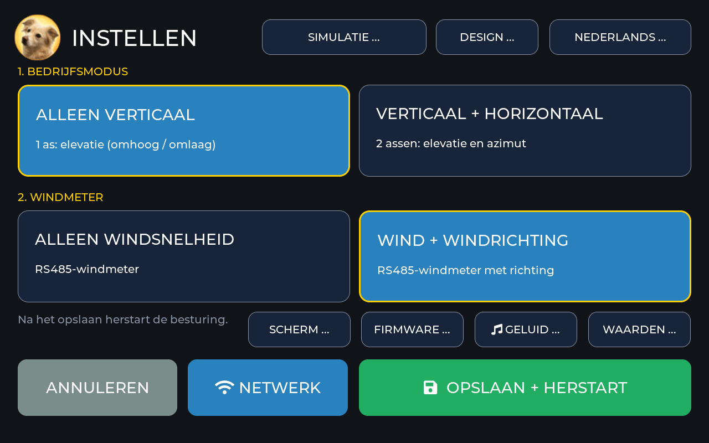
- Bedrijfsmodus kiezenALLEEN VERTICAAL (1 as: elevatie) of VERTICAAL + HORIZONTAAL (2 assen: elevatie en azimut). Af fabriek is niets gekozen. Resultaat: de gekozen knop is blauw met een gele rand.
- Windmeter kiezenALLEEN WINDSNELHEID of WIND + WINDRICHTING. Beide zijn windmeters met RS485-uitgang (Modbus-RTU); andere uitgangen (puls, 0–10 V, 4–20 mA) worden niet ondersteund. Resultaat: de knop is gemarkeerd.
- OPSLAAN + HERSTART tikkenDe knop werkt pas als beide gekozen zijn. Resultaat: alle uitgangen gaan uit, de besturing start opnieuw, daarna opent het setupprogramma.
1 as alleen verticaal
De uitgangen voor het azimut blijven altijd open. Op het display ontbreken de knoppen OOST en WEST; in plaats daarvan is er de kaart HELLING met vaste hoeken (0°, 30°, 60° en twee voorkeurshoeken). Van de zonnesensor telt alleen noord tegen zuid.
2 assen verticaal + horizontaal
Beide assen worden gevolgd, altijd na elkaar. Op het display zijn er STEILER, VLAKKER, OOST en WEST. De zonnesensor wordt met alle vier kanten geanalyseerd. De kaart HELLING met vaste hoeken is er niet.
Voor het Samba-Solar-Rack zijn twee aparte sensoren op dezelfde bus voorzien: windsnelheid (adres 3) en windrichting (adres 4), dus WIND + WINDRICHTING. De windrichting wordt alleen getoond en gelogd; ze beïnvloedt noch het volgen noch de stormbeveiliging. Wie alleen een snelheidsmeter heeft, kiest ALLEEN WINDSNELHEID.
Bedrijfsmodus en windmeter kun je altijd wijzigen. Nieuwe instellingen gelden pas na OPSLAAN + HERSTART; tot dan werkt de besturing met de vorige verder. ANNULEREN verwerpt de keuze. Heb je de bedrijfsmodus gewijzigd, controleer de installatie daarna opnieuw: SETUPPROGRAMMA → ALLES OPNIEUW CONTROLEREN (hoofdstuk 5.4).
4.3 De overige knoppen van de inrichting
| Knop | Waarvoor | Geldt | Verplicht? |
|---|---|---|---|
| NETWERK | Wifi, hotspot, tijd, toegang op afstand (4.4) | na OPSLAAN + HERSTART | vrijwillig, nodig voor de tijd |
| DESIGN … | Kleuren van de interface (4.6) | meteen | vrijwillig |
| GELUID … | Bevestigingstonen, volume (4.7) | meteen | vrijwillig |
| SCHERM … | Ruststand, bewegingsmelder, accu (4.8) | meteen | vrijwillig |
| FIRMWARE … | nieuwe firmware controleren en installeren (4.9) | na bevestiging | vrijwillig |
| WAARDEN … | alle instelbare waarden, setupprogramma (hoofdstuk 7); pas na opgeslagen inrichting | per waarde verschillend | – |
| SIMULATIE … | Testen zonder printplaat RearCircuitBoard_10 (4.10) | na bevestiging en herstart | alleen om uit te proberen |
| NEDERLANDS … (naam van de taal) | Taalkeuze (4.1) | meteen | – |
4.4 Netwerk: wifi, hotspot en tijd vrijwillig
De wifi staat af fabriek uit. De besturing heeft hem nooit nodig: volgen en stormbeveiliging werken zonder netwerk precies zo. Met wifi krijg je wel de exacte tijd (dan kent het apparaat zonsopgang en -ondergang), de webinterface voor telefoon en pc en de controle op nieuwe firmware.
Het board heeft geen eigen klok met batterij. De tijd komt alleen via de wifi van een tijdserver. Zonder wifi herkent het apparaat de nacht aan de helderheid (hoofdstuk 6).
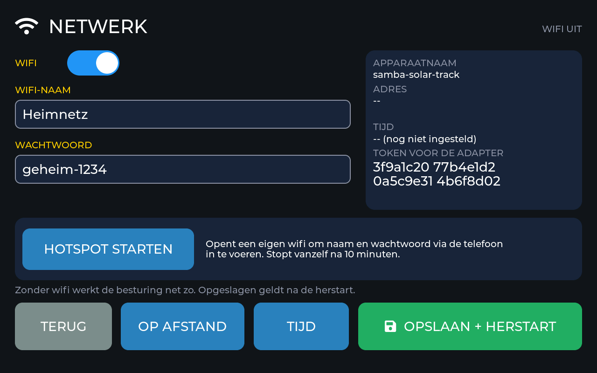
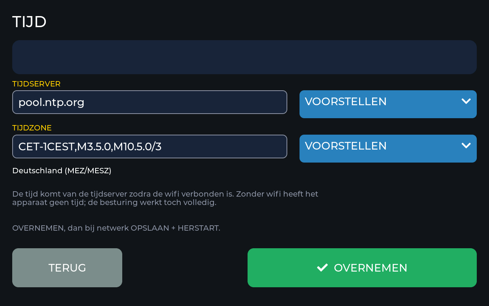
Weg A: op het display intikken
- Instellen → NETWERKResultaat: het scherm NETWERK verschijnt, rechtsboven „WIFI UIT”.
- Wifi inschakelenSchakelaar wifi aantikken. Resultaat: de schakelaar is blauw.
- Wifi-naam en wachtwoord invoerenVeld aantikken, met het schermtoetsenbord typen, met het vinkje bevestigen. De naam heeft 1 tot 32 tekens, het wachtwoord is leeg of heeft 8 tot 63 tekens. Het toetsenbord kent geen umlauts; neem voor zulke namen weg B. Resultaat: naam en wachtwoord staan in de velden.
- Tijd controlerenKnop TIJD. Fabrieksinstelling: tijdserver
pool.ntp.org, tijdzone Duitsland (MEZ/MESZ). Woon je in een andere tijdzone, kies die dan onder VOORSTELLEN en tik op OVERNEMEN. Resultaat: je bent terug in het scherm NETWERK. - OPSLAAN + HERSTARTResultaat: alle uitgangen gaan uit, het apparaat start opnieuw en maakt verbinding. In de kopregel verschijnt het wifi-symbool: wit = verbonden, geel = geen verbinding. Kort daarna staat links ernaast de tijd.
Weg B: via de instel-hotspot (met de telefoon)
- NETWERK → HOTSPOT STARTENResultaat: het apparaat opent een eigen wifi „Samba-Setup-” met vier tekens. Naam en wachtwoord staan op het display; het wachtwoord is bij elke start anders.
- Met de telefoon met deze wifi verbinden en in de browser
http://192.168.4.1openenResultaat: de instelpagina verschijnt (afbeelding rechts) met een lijst van de gevonden wifi-netwerken. - Wifi kiezen, wachtwoord en apparaatnaam invoeren, opslaanDe apparaatnaam bestaat uit a–z, 0–9 en koppelteken, af fabriek
samba-solar-track. Resultaat: het apparaat start na 1,5 s opnieuw en maakt verbinding met je wifi.

De hotspot stopt vanzelf na 10 minuten. Zolang hij loopt, rust de verbinding met de wifi.
Onder het adres dat het scherm NETWERK toont, of onder http://samba-solar-track.local (of de apparaatnaam die je gegeven hebt). Lukt de verbinding niet, dan probeert het apparaat het elke 30 seconden opnieuw, zonder einde.
4.5 Toegang op afstand: telefoon aanmelden, afstandsbediening blokkeren vrijwillig
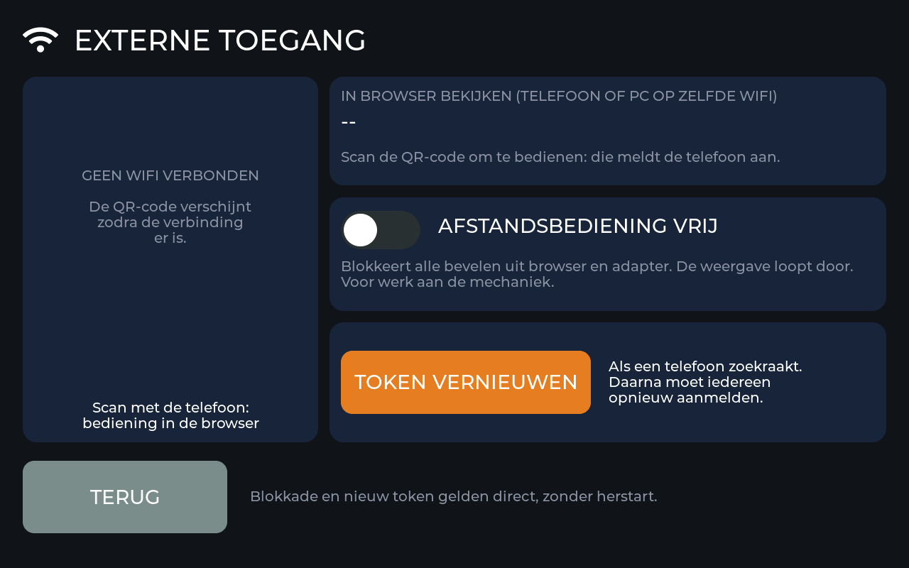
- QR-code: verschijnt zodra de wifi verbonden is. Met de telefoon scannen; de browser opent de webinterface en is aangemeld. Zonder aanmelding kan de browser alleen meekijken.
- Token: een geheime sleutel van 32 tekens die het apparaat zelf aanmaakt. Op de pc voer je hem in de webinterface in onder TOKEN INVOEREN; het scherm NETWERK toont hem in vier blokken.
- AFSTANDSBEDIENING: geblokkeerd neemt het apparaat op afstand geen enkel commando en geen enkele wijziging aan; weergaven lopen door. Blokkeren als iemand aan de mechaniek werkt. Geldt meteen.
- TOKEN VERNIEUWEN: als een telefoon kwijt is. Met bevestigingsvraag; daarna moet iedereen zich opnieuw aanmelden. Geldt meteen.
4.6 Design vrijwillig
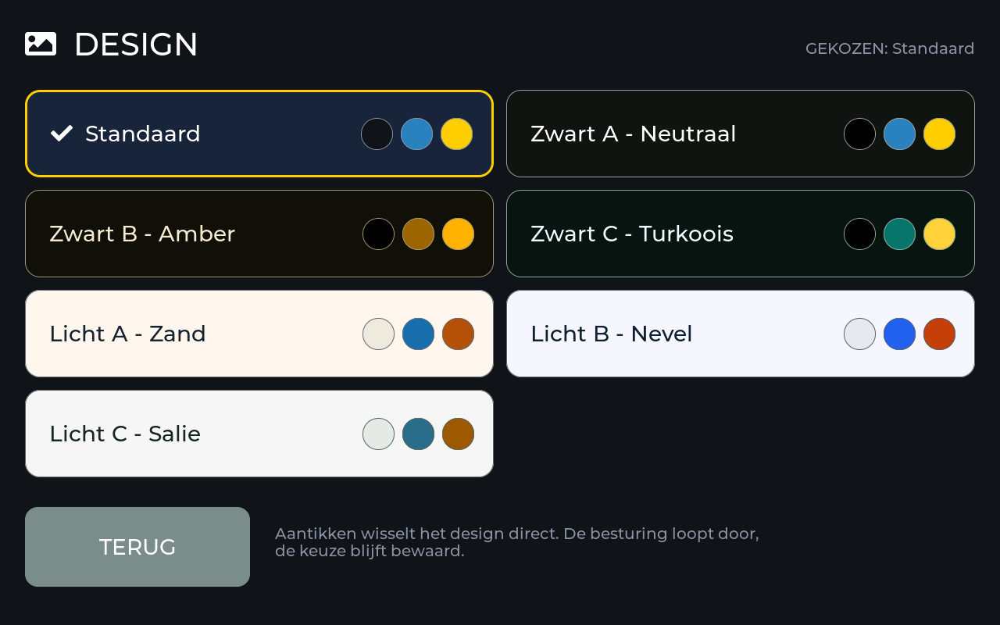
Aantikken wisselt het design meteen, op het display en in de webinterface. De besturing loopt daarbij door.
4.7 Geluid vrijwillig
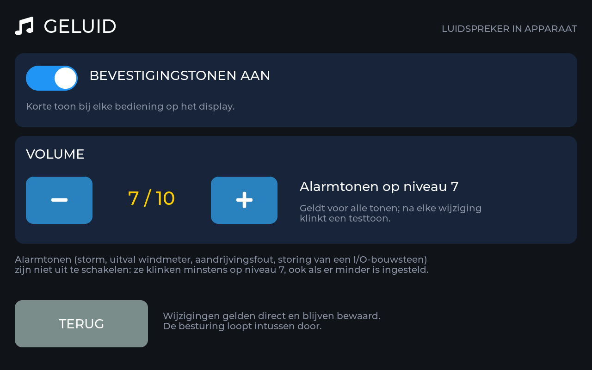
| Instelling | Fabrieksinstelling | Mogelijk | Opmerking |
|---|---|---|---|
| Bevestigingstonen | aan | aan / uit | korte toon bij elke bediening op het display |
| Volume | 7 van 10 | 1 tot 10 | na elke wijziging klinkt een testtoon |
| Alarmtonen | aan | alleen zachter, nooit uit | bij storm, uitval van de windmeter, aandrijvingsfout en storing van een chip; ze klinken altijd minstens op niveau 7 |
Wijzigingen gelden meteen en blijven bewaard. Geluid kun je alleen op het display instellen.
4.8 Scherm: ruststand, bewegingsmelder, accu vrijwillig


| Instelling | Fabrieksinstelling | Mogelijk |
|---|---|---|
| Na de wachttijd | SCHERMBEVEILIGER | ALTIJD AAN · SCHERMBEVEILIGER · DISPLAY UIT |
| Wachttijd | 5 min | 1 tot 60 min (knoppen − en +) |
| Bewegingsmelder | aan | aan / uit |
| Accu ingebouwd | ja | ja / nee (toont het laadniveau rechtsboven in het dashboard) |
Beweging voor het display of een aanraking maakt het wakker; de wekkende aanraking start geen bediening. Bij storm, uitval van de windmeter, aandrijvingsfout en storing van een chip gaat het display vanzelf aan. Het beeld van de ingebouwde camera wordt alleen in het apparaat geanalyseerd, nooit opgeslagen, getoond of verzonden.
In het scherm SCHERM staat onder de schakelaar een regel met „beweging …”. Zwaai voor het display: het getal moet stijgen. Is het te donker, dan staat daar „te donker”.
4.9 Firmware vrijwillig
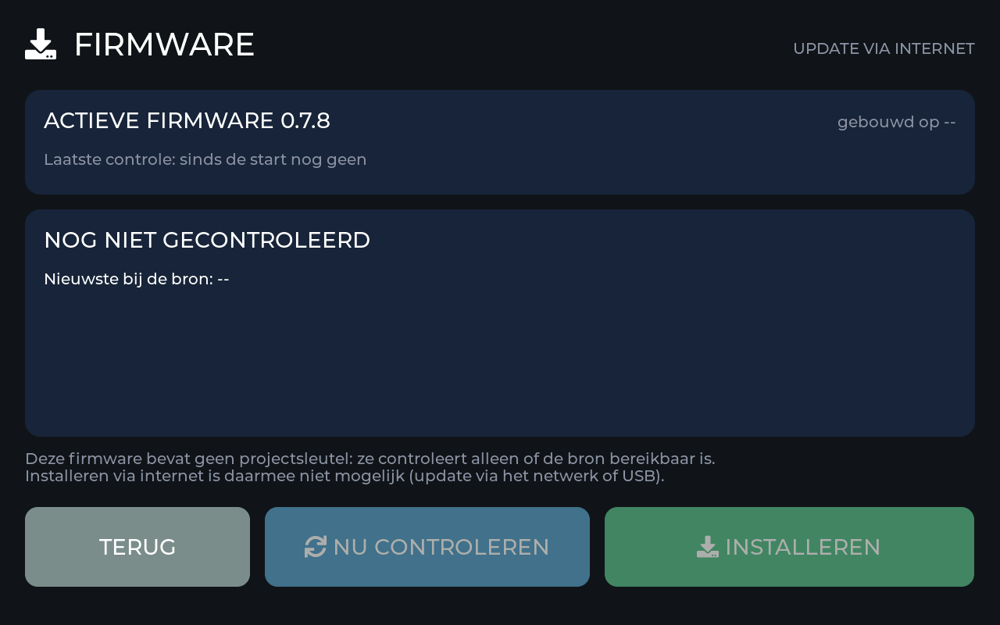
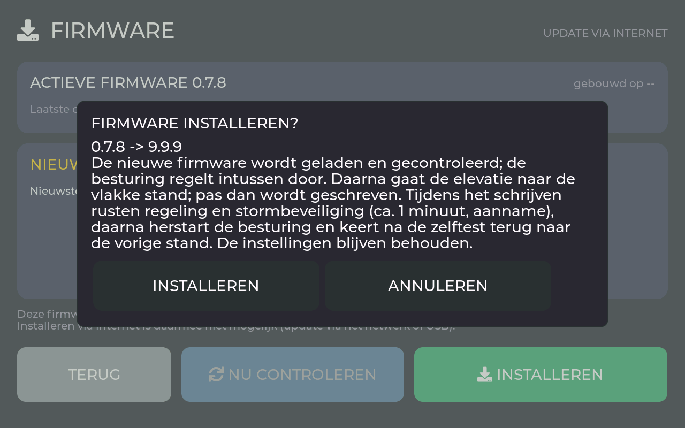
Met wifi controleert het apparaat één keer per dag of er nieuwere firmware is. Er wordt nooit vanzelf geïnstalleerd, maar alleen als je op INSTALLEREN tikt en de bevestigingsvraag bevestigt. Voor het schrijven gaat de elevatie plat; tijdens het schrijven rusten regeling en stormbeveiliging kort. Daarna start het apparaat opnieuw en test zichzelf; lukt dat niet, dan keert het terug naar de vorige firmware. De opgeslagen instellingen blijven behouden.
4.10 Simulatie: uitproberen zonder printplaat
Met de simulatie kun je de bediening uitproberen zonder printplaat RearCircuitBoard_10, zonder aandrijvingen en zonder sensoren, bijvoorbeeld aan het bureau. Inschakelen kan alleen als de printplaat niet is opgestoken, en vraagt om bevestiging. Het display toont de simulatie voortdurend aan. Zit de printplaat bij de start erop, dan schakelt een opgeslagen simulatie zichzelf uit. Ook het setupprogramma kun je in de simulatie doorlopen; het testrapport is dan als „SIMULATIE” gemarkeerd.
Een setupprogramma dat alleen in de simulatie is afgerond, geldt niet aan het echte rack. Start het apparaat voor het eerst met opgestoken printplaat, dan begint het setupprogramma vanzelf weer bij stap 1. Tot het aan het echte rack geslaagd is, blijft de automatische modus geblokkeerd (paarse balk „SETUPPROGRAMMA ONTBREEKT”); stormbeveiliging en parkeren blijven werken. Je hoeft daarvoor niets te doen, behalve het setupprogramma aan het rack te doorlopen (hoofdstuk 5).
5Het setupprogramma
Het setupprogramma controleert eenmaal aan het afgebouwde rack alles wat telt voor een veilige werking: printplaat, windmeter, rijrichtingen, rijwegen, zonnesensor en de automatische modus. Waar een mens moet oordelen, vraagt het. Waar het apparaat zelf kan meten, meet het. Pas als alle verplichte stappen geslaagd zijn, volgt de installatie vanzelf de zon.
Het setupprogramma is in firmware 0.7.0 gerealiseerd en met automatische tests en in de simulatie gecontroleerd, maar nog nooit aan een echt rack gelopen. Grenswaarden voor looptijden, Hall-stappen en hoeken zijn er nog niet (beslissing E-S3): „geslaagd” betekent eindstand bereikt of door jou bevestigd; de meetwaarden komen in het testrapport.
5.1 Voordat je begint
- Weinig wind. Bij storm breekt elke rijtest af, en het rack gaat plat.
- Daglicht of een felle lamp. Zonnesensor en proefrit hebben licht nodig (minstens de dagdrempel, af fabriek som 6000).
- Twee personen zijn beter dan één. Eén staat bij het display, de ander kijkt naar het rack. Staat het display ver weg, neem dan een telefoon om af te stemmen.
- Vrij zicht op het rack en op de windmeter; een ladder voor de windmeter als die hoog zit (klim alleen bij uitgeschakelde voeding op het rack als je daarbij in het zwenkbereik komt).
- Een telefoon met hellingmeter-app (waterpas) voor de stap „Hoek aansturen” 1 as en een kompas (ook als app) voor de locatie.
Zo opent het
- Na het opslaan van de inrichting opent het vanzelf.
- Verlaat je het (LATER VERDERGAAN), dan toont het dashboard onderaan de paarse balk „SETUPPROGRAMMA ONTBREEKT – AUTOMATISCH GEBLOKKEERD – HIER TIKKEN”. Aantikken opent het weer op dezelfde plek.
- Daarnaast via het tandwiel → WAARDEN → INGEBRUIKNAME → groene regel SETUPPROGRAMMA (ALLES CONTROLEREN).
- De voortgang blijft bewaard, ook na een herstart of stroomuitval.
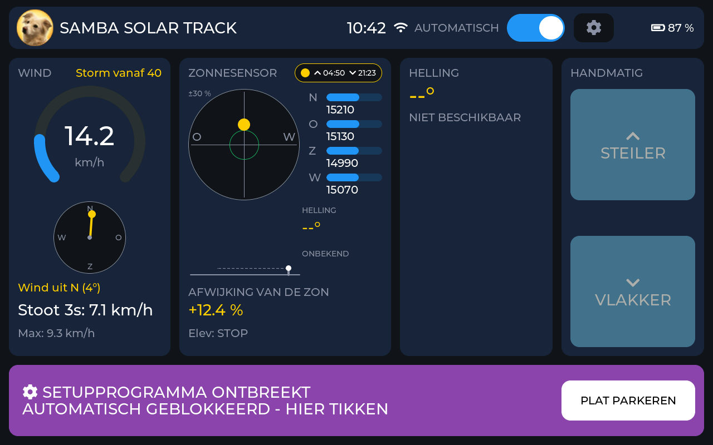
De knoppen onderaan
| Knop | Wat ze doet |
|---|---|
| LATER VERDERGAAN | Verlaat het setupprogramma. Elke rit stopt, de voortgang blijft. De automatische modus blijft geblokkeerd. |
| STAP TERUG | Gaat naar de vorige stap (niet in de eerste stap en niet na het afronden). |
| OVERSLAAN | Alleen bij vrijwillige stappen: wifi en tijd, locatie, lampjes/geluid/bewegingsmelder. Rij- en veiligheidsstappen kun je nooit overslaan. |
| STOP (rood) | Verschijnt bij elke rit. Stopt meteen. |
| HERHALEN | Na een afbreking of een correctie: de stap nog een keer doen. |
Eindschakelaars, maximale looptijd, dode tijd en inschakelduur werken ook in het setupprogramma. De aandrijvingen stoppen toch niet als er een hand tussen zit. Niemand in het zwenkbereik, ook geen dieren. Komt er storm, dan breekt de stap af en gaat het rack plat (afbeelding hieronder).
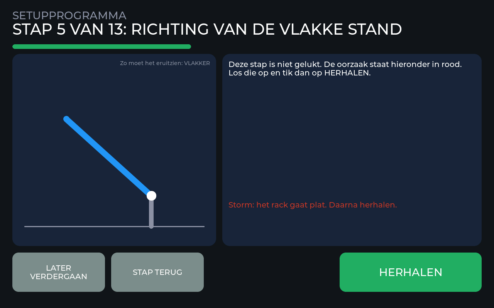
5.2 De stappen in een overzicht
| Nr. | Stap | 1 as | 2 assen | Beweegt het rack? |
|---|---|---|---|---|
| 1 | Veiligheid | ✓ | ✓ | nee |
| 2 | Gegevens van de installatie | ✓ | ✓ | nee |
| 3 | Printplaat en voeding | ✓ | ✓ | nee |
| 4 | Windmeter | ✓ | ✓ | nee |
| 5 | Richting van de vlakke stand | ✓ | ✓ | ja: kort, dan helemaal plat |
| 6 | Bereik van de helling | LOOPTIJD INMETEN | helemaal steil en terug | ja: hele weg |
| 7 | Draaiing oost – west | – | ✓ | ja: hele weg |
| (+1) | Reset van de synchroonbesturing | alleen als onder „Gegevens van de installatie” een reset-aansluiting gekozen is | ja: helemaal plat | |
| 7 | Hoek aansturen | ✓ | – | ja: naar 30° |
| 8 | Zonnesensor | zuid, noord | oost, west, zuid, noord | nee |
| 9 | Wifi en tijd vrijwillig | ✓ | ✓ | nee |
| 10 | Locatie vrijwillig | met richting | zonder richting | nee |
| 11 | Lampjes, geluid, bewegingsmelder vrijwillig | ✓ | ✓ | nee |
| 12 | Proefrit van de automatische modus | Helling | helling, dan draaiing | ja: een stukje |
| 13 | Klaar | ✓ | ✓ | nee |
Beide bedrijfsmodi hebben 13 stappen: bij 2 assen komt „Draaiing oost – west” erbij, bij 1 as „Hoek aansturen”. Is een reset van de synchroonbesturing ingesteld (bijvoorbeeld bij het Samba-Solar-Rack met BST-KZQ-15A-2), dan zijn het er 14, en vanaf deze stap verschuiven de nummers met één. De kopregel toont altijd „STAP n VAN m”.
5.3 Stap voor stap
1Veiligheid beide
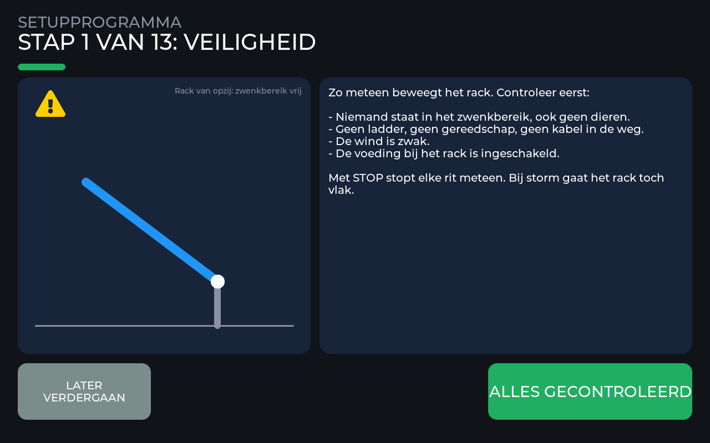
„Zo meteen beweegt het rack. Controleer eerst” met vier punten en de knop ALLES GECONTROLEERD.
- Niemand in het zwenkbereik, ook geen dieren.
- Geen ladder, geen gereedschap, geen kabel in de weg.
- De wind is zwak.
- De voeding bij het rack is ingeschakeld.
Dan ALLES GECONTROLEERD.
Stap 2 verschijnt.
Eerst alles in orde brengen. Deze stap kun je niet overslaan.
2Gegevens van de installatie beide
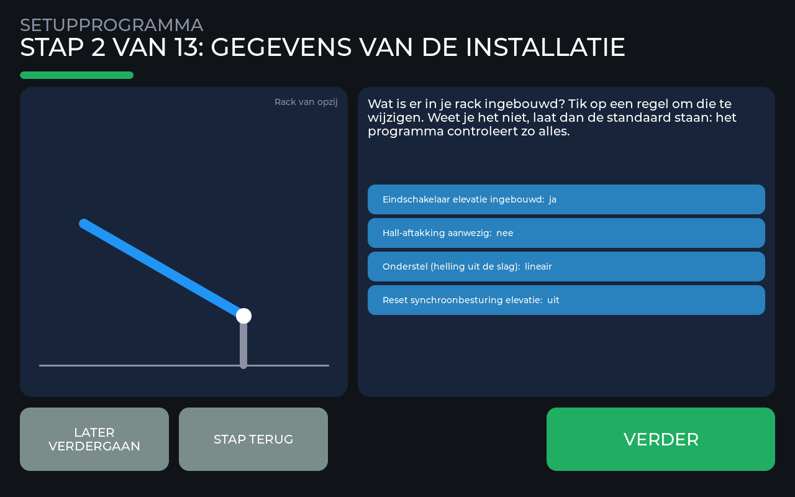
Blauwe regels met wat er aan je rack ingebouwd is, telkens met de actuele waarde.
Elke regel aantikken tot de juiste waarde er staat (elke tik schakelt verder). Wat de waarden betekenen en wat juist is voor jouw rack: eindschakelaars, Hall-aftakking, onderstel, reset. Dan VERDER.
De regels tonen jouw waarden. Stap 3 verschijnt.
Weet je het niet, laat dan de fabrieksinstelling staan. De volgende stappen controleren het na.
Samba-Solar-Rack 2.0-E Plus
Eindschakelaar elevatie: nee · Hall-aftakking: ja, als het HallTapBoard ingebouwd is · Onderstel: G2 · Reset synchroonbesturing elevatie: J23 (printplaat vanaf ontwerp 0.12, synchroonbesturing BST-KZQ-15A-2).
Ander rack
Eindschakelaars: ja alleen als er eigen eindschakelaars aan het einde van de rijweg op de printplaat aangesloten zijn. Onderstel: lineair. Reset: uit, tenzij je synchroonbesturing een reset-ingang heeft en die aangesloten is.
3Printplaat en voeding beide
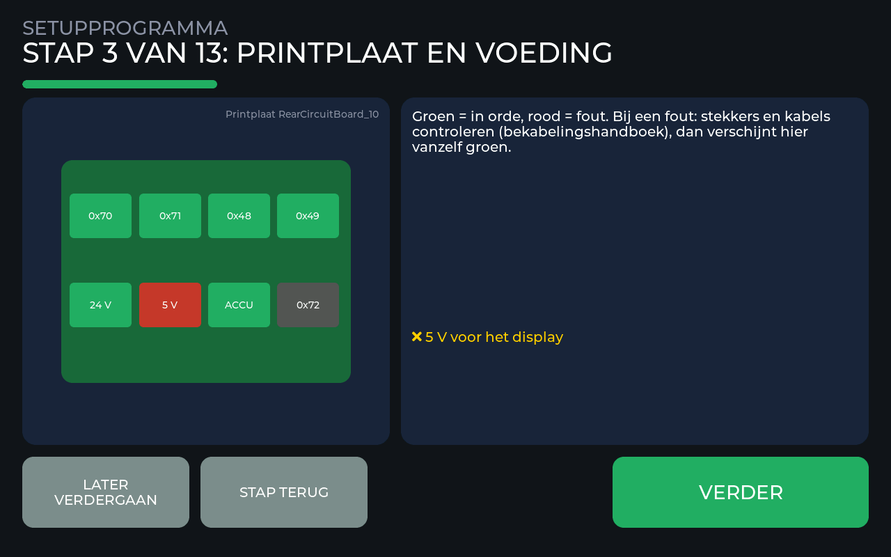
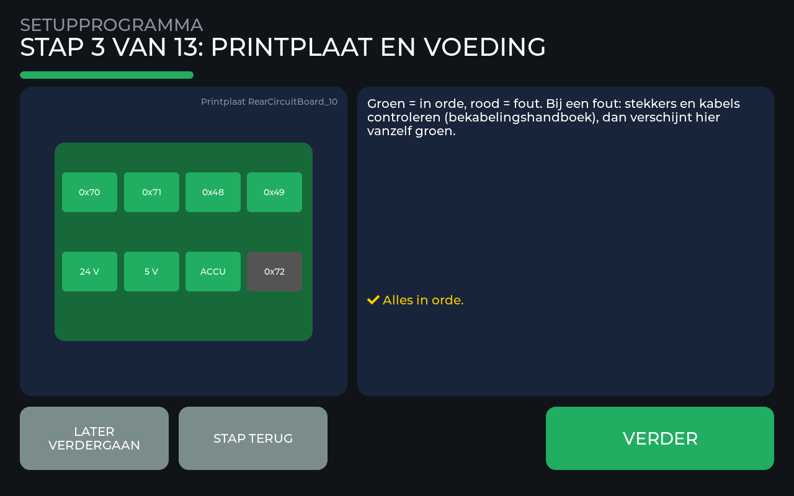
Eerst een uitleg met CONTROLEREN, dan een afbeelding van de printplaat met acht velden.
CONTROLEREN tikken, even wachten.
Alle velden groen of grijs, rechts „Alles in orde”. Dan VERDER.
Rood veld: stekkers en kabels controleren (bedradingshandboek, alleen in het Duits). Het veld wordt vanzelf groen zodra de fout weg is. Pas dan werkt VERDER.
| Veld | Wat gecontroleerd wordt | Rood betekent |
|---|---|---|
| 0x70 | Chip van de schakeluitgangen en eindschakelaars | printplaat zit niet goed of is gestoord; zonder deze chip beweegt er niets |
| 0x71 | Chip van de signaallampjes | lampjes en bewaking van de voeding gestoord |
| 0x48 | Meting van de zonnesensor | chip gestoord of voeding van de zonnesensor overbelast (kortsluiting in de kabel?) |
| 0x49 | Meting van de voeding | tweede meetchip antwoordt niet |
| 24 V | 24 V van de voeding | voeding van de besturing uit of zekering |
| 5 V | 5 V voor het display | spanningsomvormer van de printplaat levert niet |
| ACCU | Laadblokkering van de accu en voeding van de sensor | laadblokkering onlogisch (zie handleiding voor opbouw en bediening, hoofdstuk 7) |
| 0x72 | Chip van de resetcontacten (klem J23) | grijs als er geen reset op J23 gekozen is; rood als hij gekozen is maar niet antwoordt (printplaat van voor ontwerp 0.12?) |
4Windmeter beide
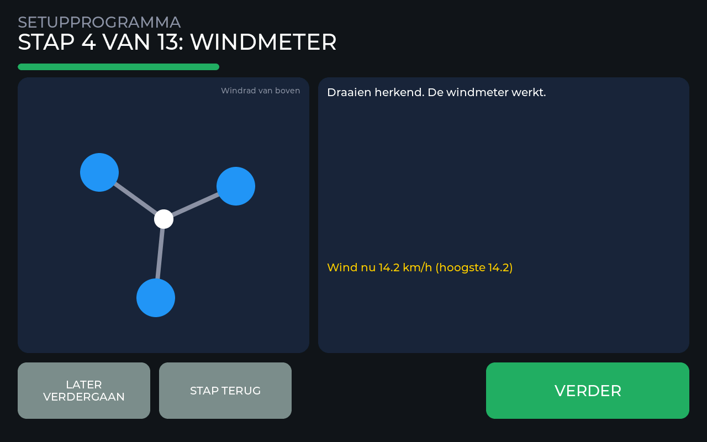
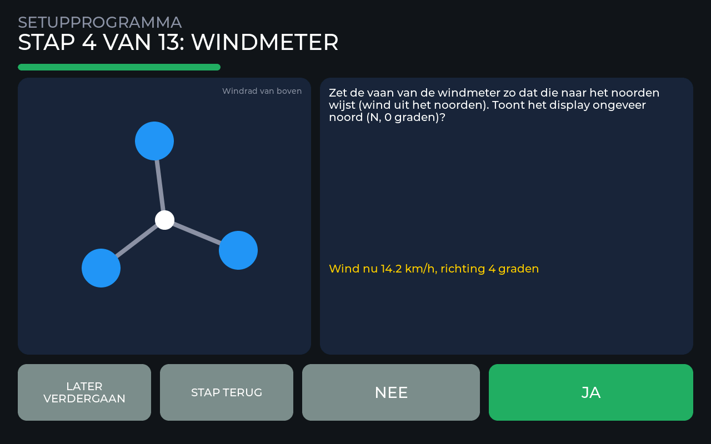
Een windrad van boven; rechtsonder in geel „Wind nu … km/h (hoogste …)”.
- START tikken.
- Het windrad met de hand flink draaien.
- VERDER.
- Alleen met windrichting: de vaan naar het noorden zetten en kijken of het display ongeveer N (0°) toont; JA of NEE.
De weergave stijgt bij het draaien met minstens 2 km/h, de tekst wisselt naar „Draaien herkend”. De richting toont ongeveer noord.
„De windmeter is nog niet rondgedraaid”: flinker draaien. Geen getal: de windmeter antwoordt niet; bedrading en gegevens van de windmeter controleren. Richting fout (NEE): montage en noordmarkering van de windmeter controleren, dan HERHALEN.
5Richting van de vlakke stand beide
De belangrijkste stap: hij legt vast waarheen het rack bij storm gaat (hoofdstuk 3).
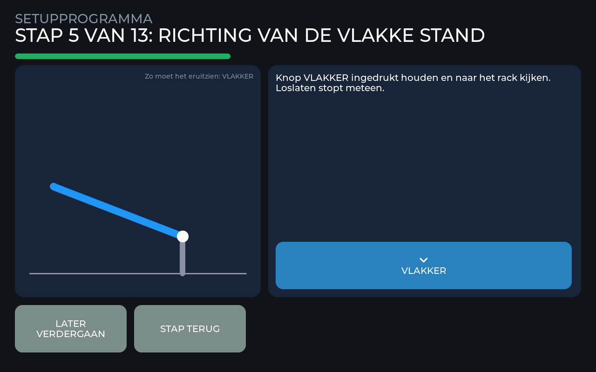
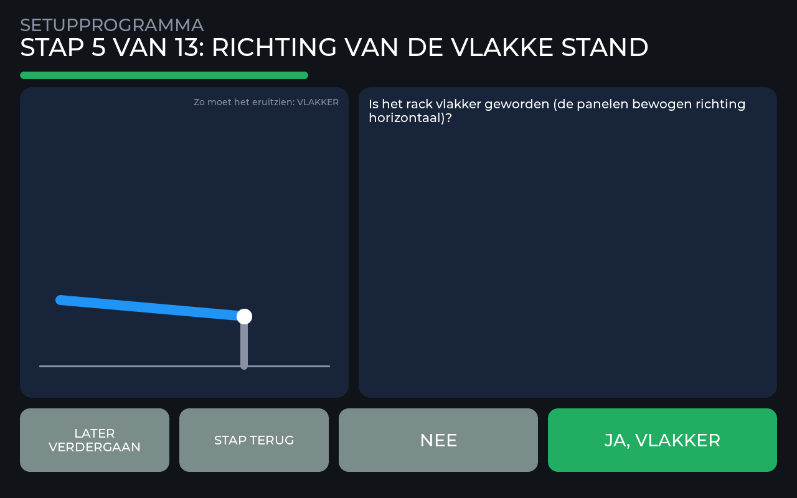
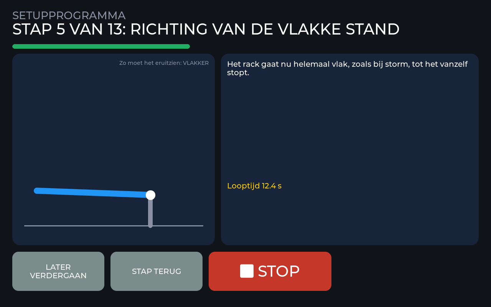
Links een schets „Zo moet het eruitzien: VLAKKER”, rechts de uitleg en een grote knop VLAKKER.
- VERDER.
- VLAKKER ingedrukt houden en het rack observeren. Loslaten stopt meteen; na 5 s stopt het vanzelf.
- JA, VLAKKER als de panelen richting horizontaal bewogen hebben, anders NEE.
- Toekijken tot het rack vanzelf stopt.
Het rack wordt vlakker en loopt dan tot de eindstand. „De vlakke stand is gecontroleerd. Vanaf nu beschermt de stormbeveiliging het rack veilig.”
Bij NEE zet het apparaat de richting zelf om (waarde „Vlakke stand ligt richting OMHOOG”): „Goed dat we het controleren”, dan HERHALEN. Is er helemaal niets bewogen: voeding bij het rack, bedrading van de contacten, synchroonbesturing (tipbedrijf?) controleren. Staat het rack al helemaal plat, dan vraagt het apparaat meteen of het plat staat.
Staat „Eindschakelaar elevatie ingebouwd” op nee, dan wacht de besturing de hele maximale looptijd af, ook als het rack al stilstaat (looptijd-eindstand). Bij het Samba-Solar-Rack is dat 90 s. Met Hall-aftakking eindigt de rit ongeveer 1 s nadat de pulsen stoppen.
6Bereik van de helling
1 as LOOPTIJD INMETEN
Het apparaat meet hoe lang het rack van helemaal plat tot helemaal steil en terug nodig heeft. Daarmee kent het later elke hoek. Tik op LOOPTIJD INMETEN; een eigen scherm leidt je door vier stappen (afbeeldingen hieronder). Daarna kom je terug en tik je op VERDER.
2 assen helemaal steil en terug
START: het rack loopt helemaal steil tot de aanslag, dan helemaal plat tot de aanslag. Het apparaat meet beide tijden. Daarna vraagt het of het rack helemaal steil en weer helemaal plat gelopen is, zonder te haken of ergens tegenaan te stoten.
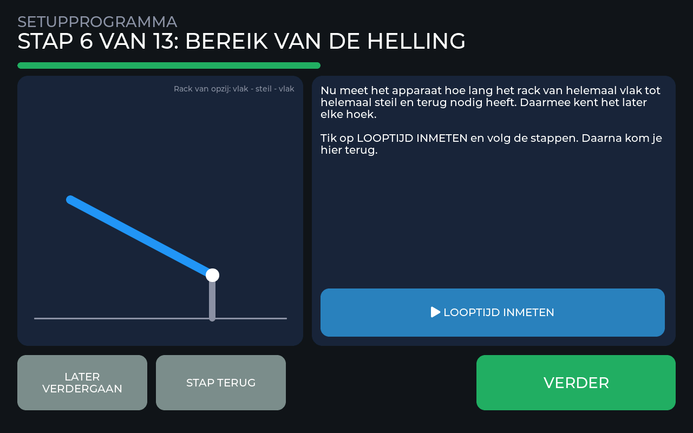
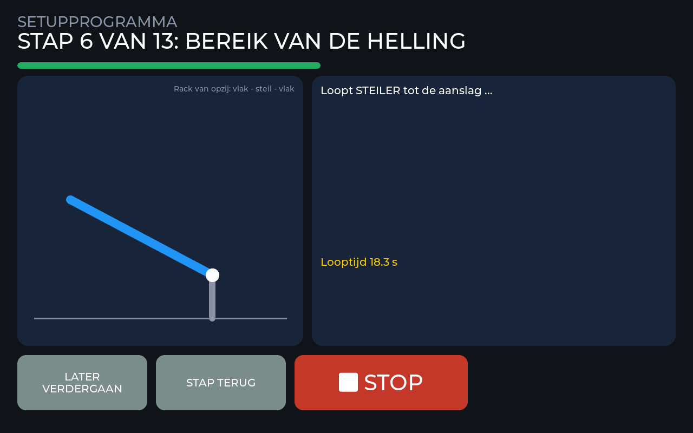
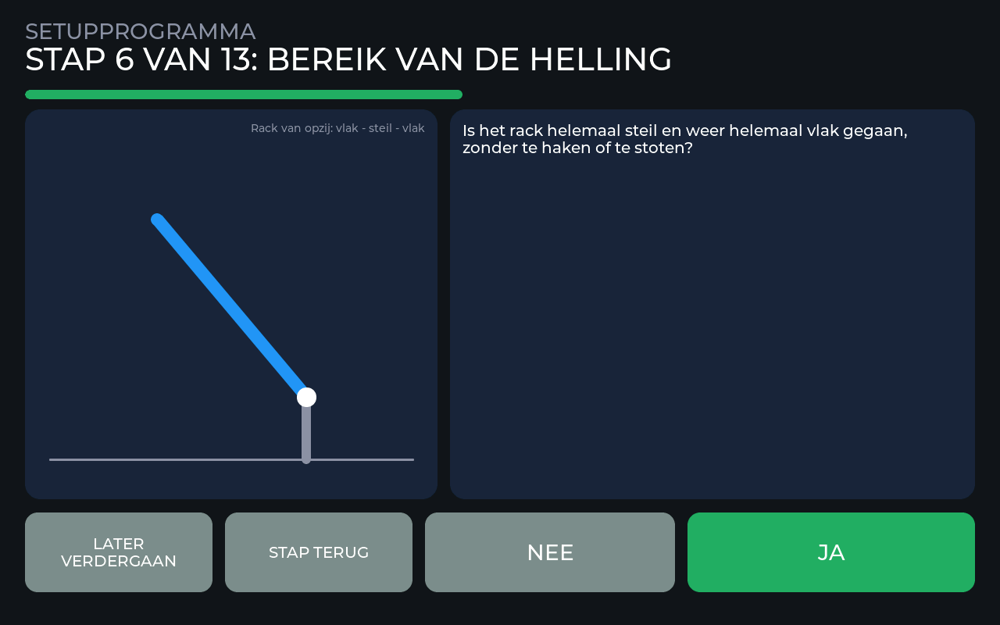
1 as De vier stappen van LOOPTIJD INMETEN


1 as de knop LOOPTIJD INMETEN. 2 assen de lopende looptijd, dan de vraag.
1 as LOOPTIJD INMETEN doorlopen, OVERNEMEN, terug, VERDER. 2 assen START, toekijken, JA of NEE.
Het rack bereikt beide eindstanden zonder haken en stoten. 1 as „Beide tijden zijn plausibel”: elk minstens 10 s, korter dan 0,9 × maximale looptijd, OMHOOG en OMLAAG hoogstens in de verhouding 1 : 2.
„De looptijd is nog niet ingemeten”: eerst inmeten. Afbreking „MAX. LOOPTIJD TE KORT OF AANGEKOMEN NIET GETIKT”: maximale looptijd verhogen. NEE bij 2 assen: mechaniek en aandrijving controleren (montagehandleiding van het rack), dan HERHALEN.
Staat „Hall-aftakking aanwezig” op ja, dan heet de regel „INMETEN: LOOPTIJD EN HALL-STAPPEN”. De meetritten stoppen dan vanzelf en tellen de Hall-stappen; plausibel zijn per richting minstens 1000 stappen, OMHOOG en OMLAAG hoogstens 3 % uit elkaar. Luidt de afwijzing „HALL TELT ACHTERUIT”, zet dan „Hall-telrichting omkeren” op ja.
7Draaiing oost – west 2 assen
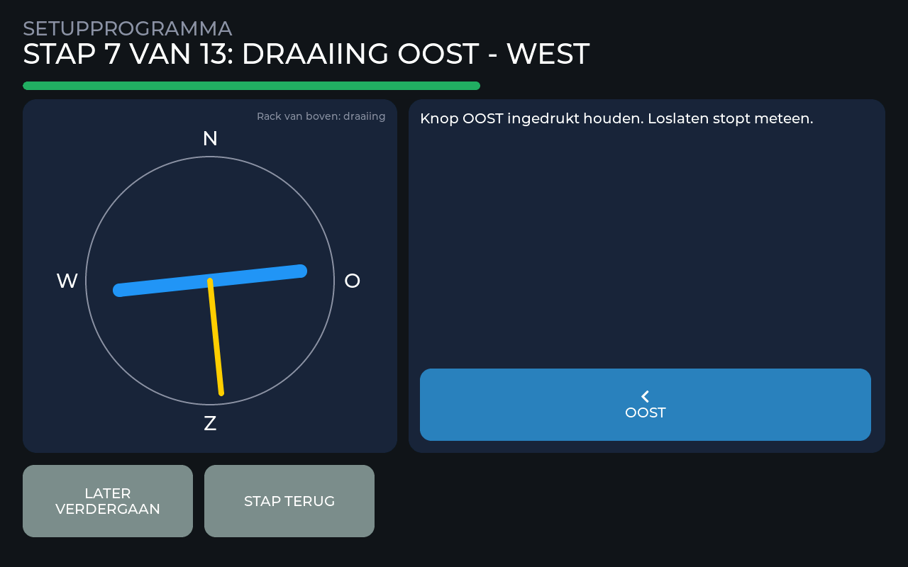
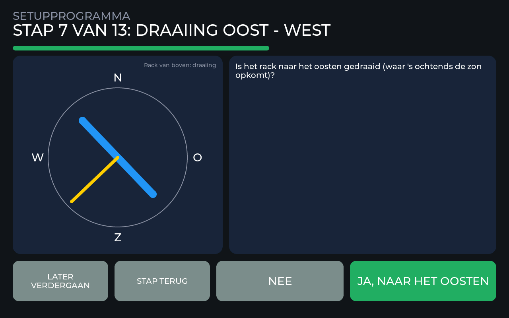
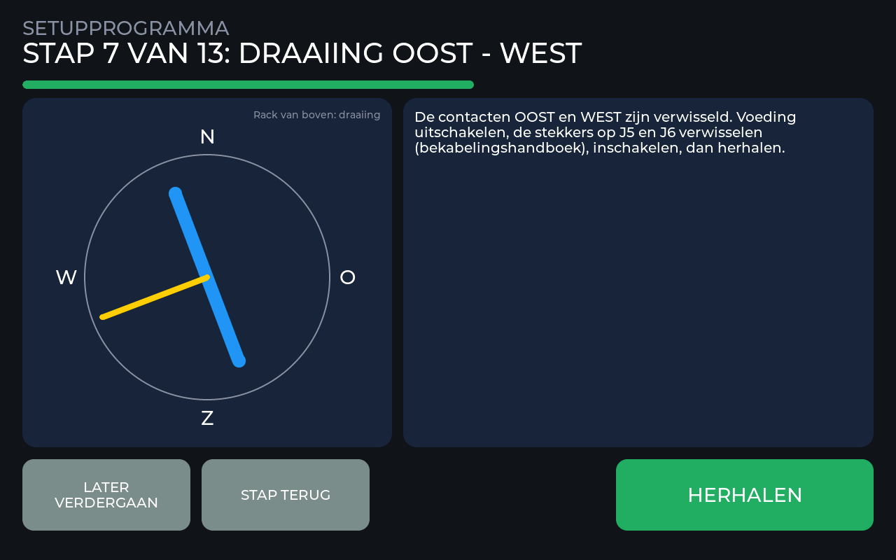
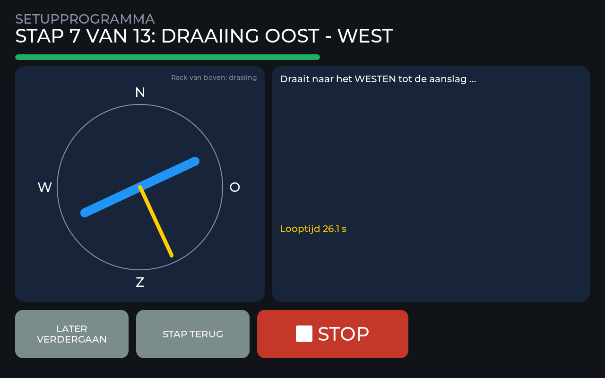
Links een bovenaanzicht met kompas (geel: kijkrichting), rechts de uitleg en de knop OOST.
- VERDER, dan OOST ingedrukt houden (hoogstens 5 s).
- JA, NAAR HET OOSTEN als het rack naar de ochtendzon gedraaid is.
- Toekijken: het rack draait helemaal naar het oosten, helemaal naar het westen en terug naar het oosten.
Alle drie de ritten bereiken hun aanslag. „Draaiing gecontroleerd. Het rack staat in de ochtendstand.”
NEE: dat kun je niet via een instelling omzetten. Voeding uitschakelen, de stekkers op J5 en J6 verwisselen (bedradingshandboek, alleen in het Duits), inschakelen, HERHALEN. Geen beweging: voeding en bedrading van de azimutaandrijving controleren.
+Reset van de synchroonbesturing alleen als ingesteld
Deze stap is er alleen als in stap 2 een reset-aansluiting gekozen is. Hij komt na de rijweg (bij 2 assen na de draaiing). Er is nog geen eigen afbeelding voor; het verloop toont de balk in het dashboard, net als bij de reset via WAARDEN.

„De synchroonbesturing van de aandrijvingen heeft een reset-ingang. Zo meteen activeert het apparaat die.” en de knop RESET ACTIVEREN.
RESET ACTIVEREN, toekijken. Bij 2 assen met twee resets lopen beide na elkaar.
De synchroonbesturing trekt de aandrijvingen helemaal in (bij het rack: plat). „Reset gecontroleerd.”
„Reset niet mogelijk (aansluiting of chip controleren)”: hij is niet binnen 20 s begonnen; klem J23 of J5 en waarde reset controleren. „Reset afgebroken”: de oorzaak staat in de statusbalk; daarna HERHALEN.
De duur van de resetpuls (5 s) en het gedrag van de synchroonbesturing daarna zijn aan het rack nog niet gemeten.
7Hoek aansturen 1 as
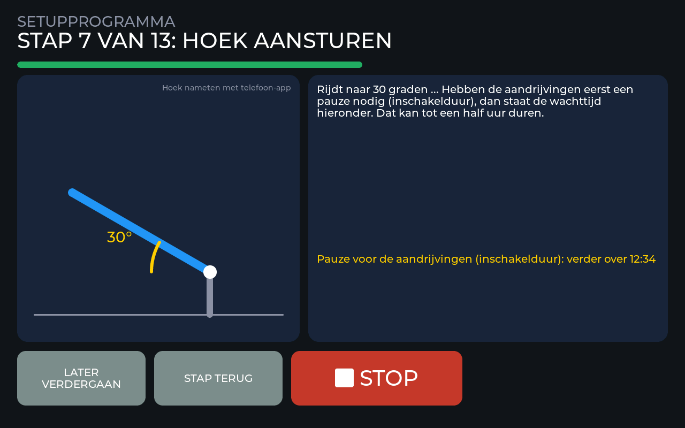
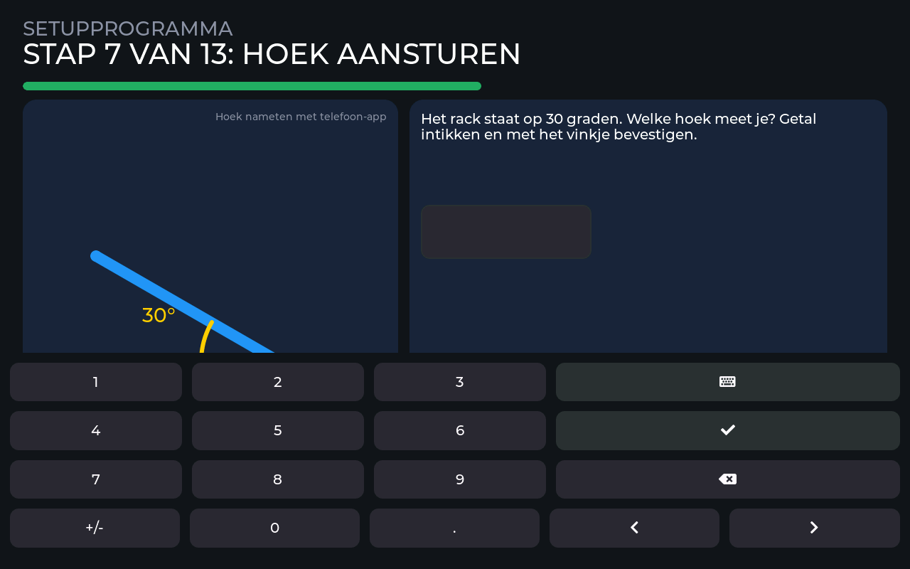
„Nu gaat het rack naar 30 graden.” en de knop NAAR 30 GRADEN.
Knop tikken, wachten. Dan de telefoon plat op een paneel leggen, de hoek aflezen, intikken (0 tot 90), vinkje.
Het rack stopt bij ongeveer 30°. „Hoek vastgelegd. Hij staat in het testrapport.”
„Hoek niet bereikbaar (looptijd of Hall-sensor)”: stap 6 herhalen. Wijkt jouw waarde sterk af: onderstel controleren. Een grens waarboven de stap mislukt, is er nog niet.
8Zonnesensor
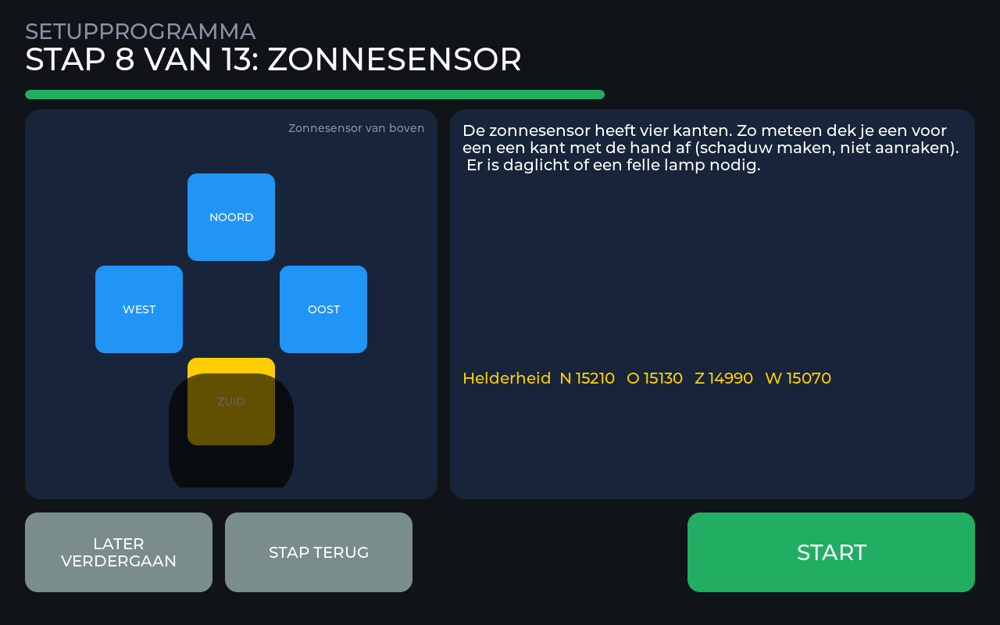
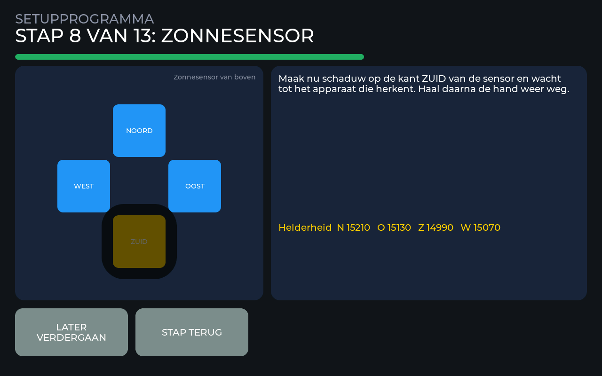
De sensor van boven met vier velden. De kant die je moet beschaduwen, is gemarkeerd.
START. Dan de genoemde kant beschaduwen, wachten tot het apparaat die herkent, hand weghalen. 1 as ZUID, dan NOORD. 2 assen OOST, WEST, ZUID, NOORD.
Elke kant wordt minstens 25 % donkerder en 1 s lang herkend. „Alle kanten van de sensor zijn juist toegewezen.”
Herkent het apparaat een andere kant, dan corrigeert het de toewijzing van de ingangen zelf en telt dat in het testrapport. „Te donker”: bij daglicht of met een felle lamp herhalen. Er wordt niets herkend: schaduw groter maken, dichter bij de sensor.
9Wifi en tijd vrijwillig
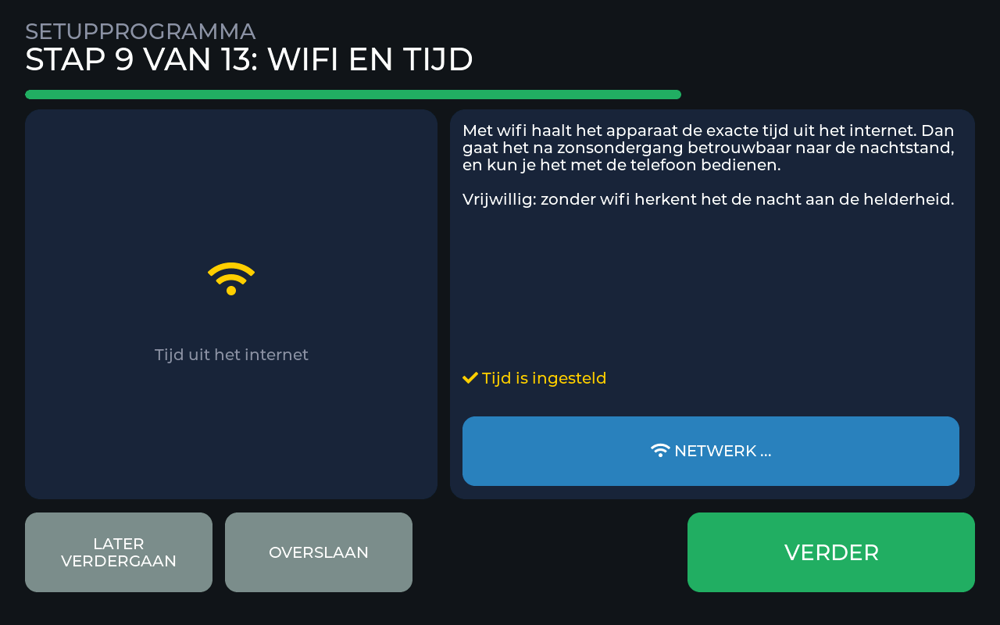
Een uitleg, de knop NETWERK … en VERDER.
NETWERK … opent het scherm uit hoofdstuk 4.4. Na de herstart opent het setupprogramma weer op deze plek. Of OVERSLAAN.
„Tijd is ingesteld”, dan VERDER.
„Nog geen tijd: wifi instellen of overslaan.” Zonder wifi herkent het apparaat de nacht aan de helderheid.
10Locatie vrijwillig
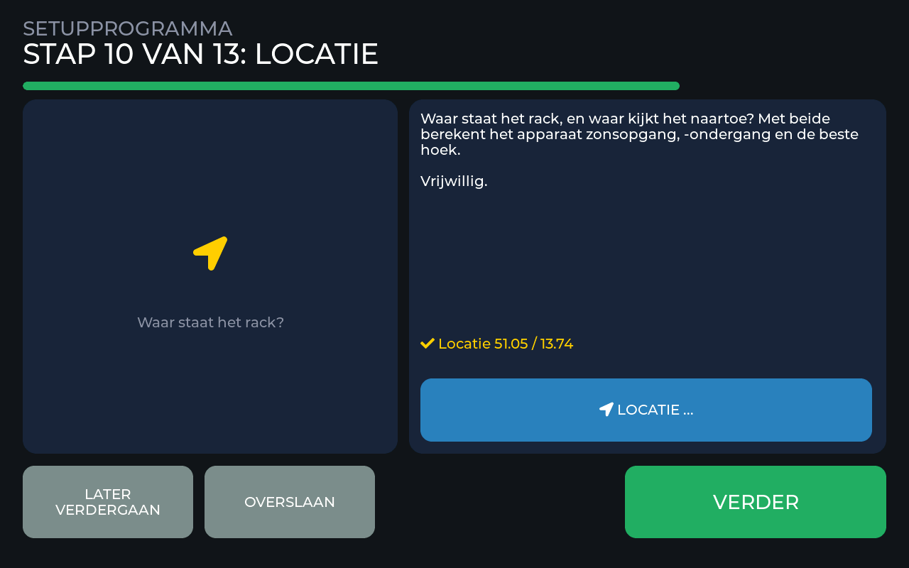
1 as „Waar staat het rack, en waar kijkt het naartoe?” 2 assen „Waar staat het rack?” en de knop LOCATIE ….
LOCATIE … opent de kaart (hoofdstuk 6.2); bij 1 as daarna ook de richting. Of OVERSLAAN.
Onderaan „Locatie …” met breedte en lengte, dan VERDER.
„Nog geen locatie: invoeren of overslaan.”
11Lampjes, geluid, bewegingsmelder vrijwillig
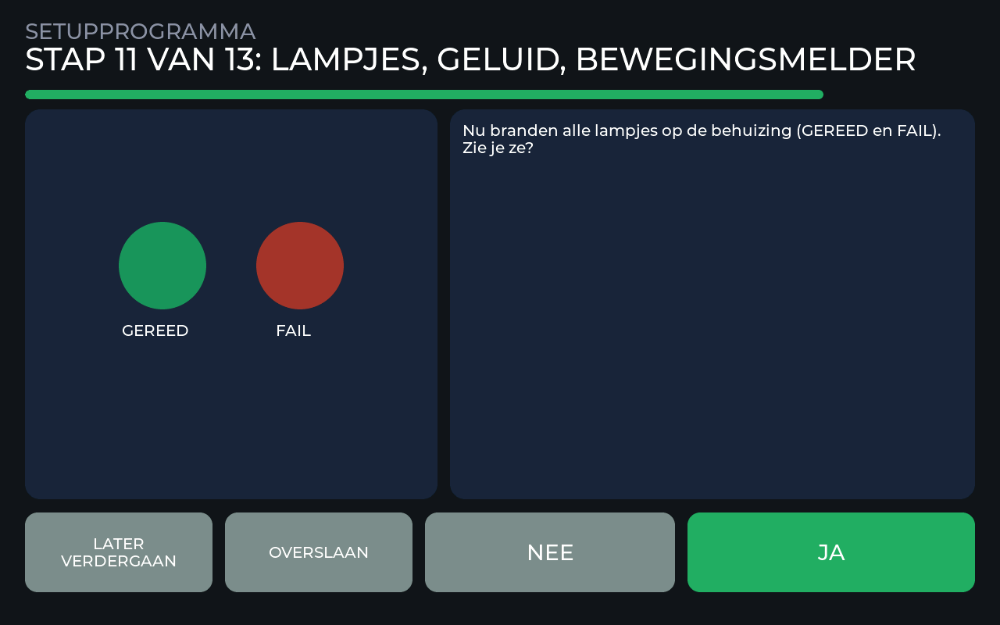
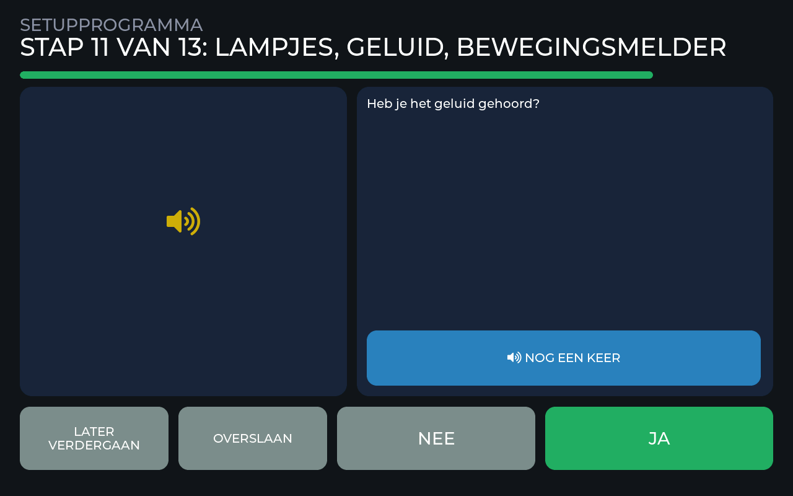
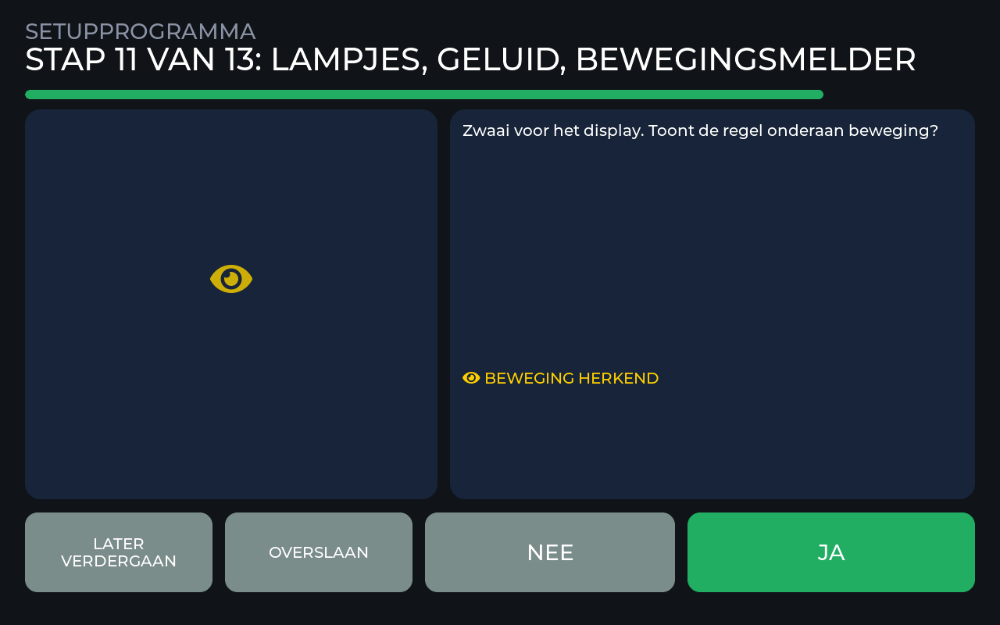
Drie vragen na elkaar: lampjes, geluid, bewegingsmelder.
START, dan telkens JA of NEE. Of OVERSLAAN.
BEREIT en FAIL branden op de behuizing en op de printplaat; het geluid is te horen; bij het zwaaien staat er „BEWEGING HERKEND”.
NEE wordt in het testrapport vermeld, de stap gaat toch verder. Lampjes: aansluiting van de lampjes op de behuizing controleren (bedradingshandboek, alleen in het Duits). Geluid: volume. Beweging: genoeg licht voor het display?
12Proefrit van de automatische modus
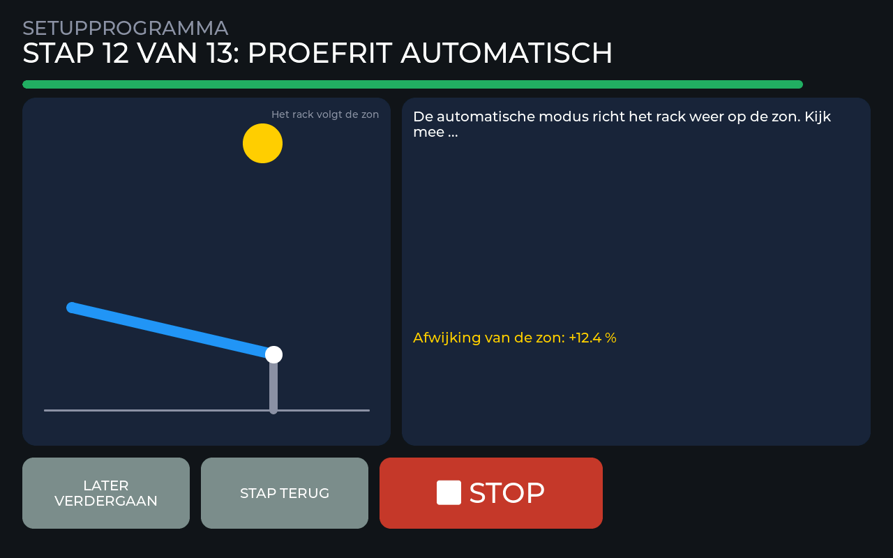
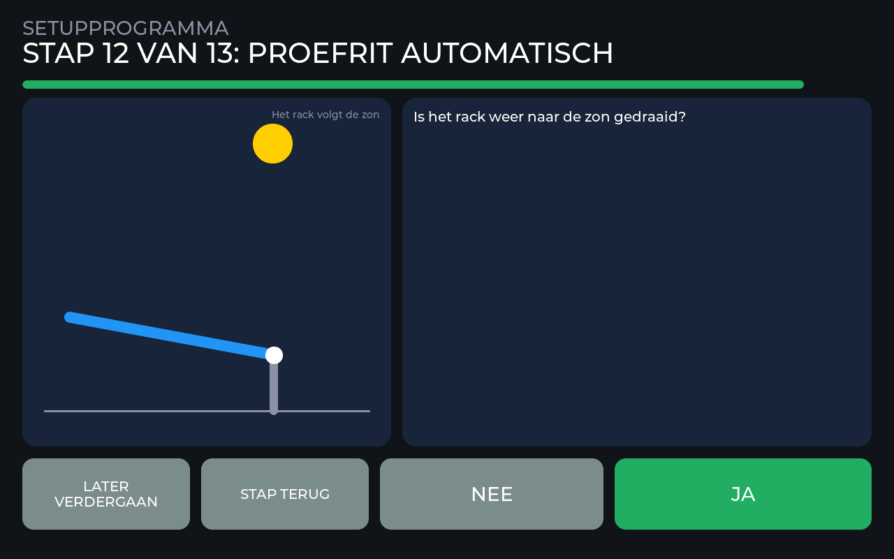
Uitleg, dan „Verzet het rack een beetje …”, dan de lopende automatische modus met de afwijking in procent.
START, toekijken, JA of NEE. 2 assen eerst de helling, dan de draaiing.
Het apparaat verzet de as ongeveer 4 s lang, dan loopt de automatische modus terug naar de zon en stopt. „De proefrit is geslaagd.”
Loopt de automatische modus van de zon weg, dan zet het apparaat de richting zelf om („De richting is omgezet. Nog een keer, graag.”): bij de helling „Noord helderder = OMHOOG”, bij de draaiing verwisselt het de ingangen oost en west. „De automatische modus heeft niet uitgelijnd. Genoeg zon?”: na 3 min zonder succes; bij zon herhalen.
13Klaar
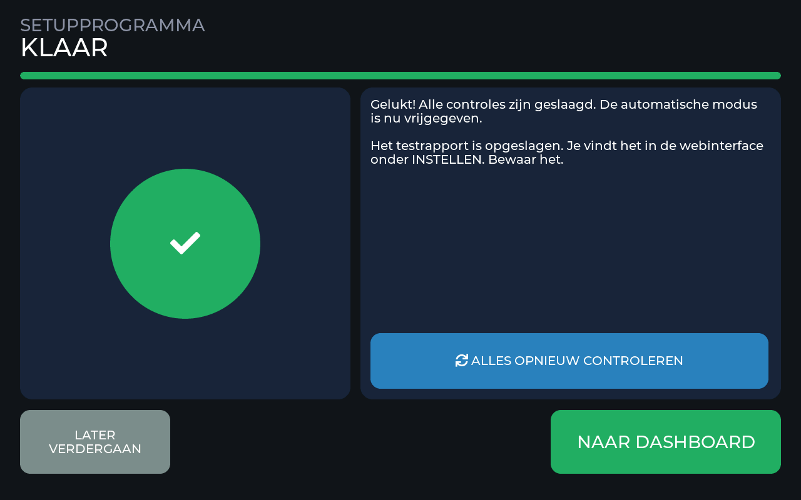
Een groen vinkje, NAAR DASHBOARD en de knop ALLES OPNIEUW CONTROLEREN.
NAAR DASHBOARD. De schakelaar voor de automatische modus bovenaan inschakelen als hij uit staat.
De paarse balk is weg. De statusbalk toont de automatische modus (bijvoorbeeld „AUTO: UITGERICHT”).
Er ontbreekt nog een verplichte stap: „Deze stap ontbreekt nog.” Terug naar die stap.
5.4 Na het afronden
- Testrapport: het apparaat bewaart de laatste drie rapporten. In de webinterface onder INSTELLEN → SETUPPROGRAMMA toont BEKIJKEN het rapport als vormgegeven blad (licht voor de printer, donker voor een bestand) met de toets OPSLAAN ALS PDF; TEKST downloadt het als tekstbestand (sinds firmware 0.7.6, oudere rapporten alleen als tekst). Het bevat datum, firmware, bedrijfsmodus, windmeter, elke stap met resultaat en de meetwaarden (looptijden, Hall-stappen, afgelezen hoek, toewijzing van de zonnesensor, antwoorden over lampjes, geluid en bewegingsmelder). Bewaar het: het helpt bij latere controles en vragen.
- Afzonderlijke waarden blijven onder WAARDEN te wijzigen (hoofdstuk 7); LOOPTIJD INMETEN kun je daar altijd herhalen 1 as.
- Alles opnieuw controleren: na het vervangen van een onderdeel (aandrijving, sensor, windmeter, printplaat) of na een gewijzigde bedrijfsmodus: WAARDEN → INGEBRUIKNAME → SETUPPROGRAMMA (ALLES CONTROLEREN) opent het scherm „Klaar”; daar ALLES OPNIEUW CONTROLEREN en bij de bevestigingsvraag OPNIEUW BEGINNEN. Het programma begint bij stap 1. Tot alle stappen weer geslaagd zijn, is de automatische modus geblokkeerd; stormbeveiliging en parkeren blijven werken. Het vorige testrapport blijft bewaard. Een setupprogramma dat alleen in de simulatie afgerond is, begint aan het echte rack vanzelf opnieuw (4.10).
6Locatie, richting, zon en nacht
Kent het apparaat de tijd (via wifi) en de locatie, dan berekent het de loop van de zon: zonsopgang, zonsondergang, hoogte en richting van de zon. Daarmee gaat het op tijd naar de nachtstand. Overdag volgt de zonnesensor verder.
De berekening van de zonnestand is getest met vergelijkingswaarden van een astronomische bibliotheek. Op het apparaat met echte tijd en echt rack is ze nog niet beproefd.
6.1 De pagina ZON
In het dashboard staat in de kaart ZONNESENSOR bovenaan een klein geel veld met opkomst en ondergang, bijvoorbeeld „↑ 04:50 ↓ 21:23”. Aantikken opent de pagina ZON. Bij het openen loopt de zon in een korte animatie van de opkomst tot de huidige stand.
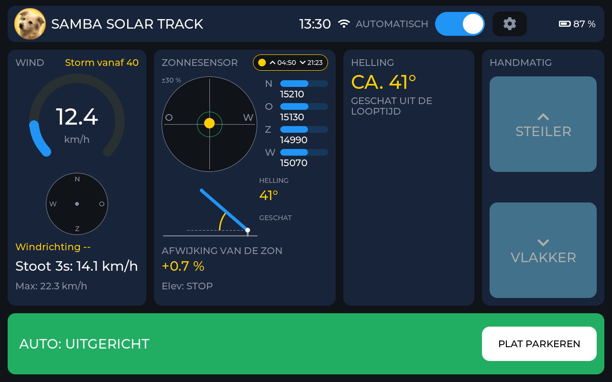
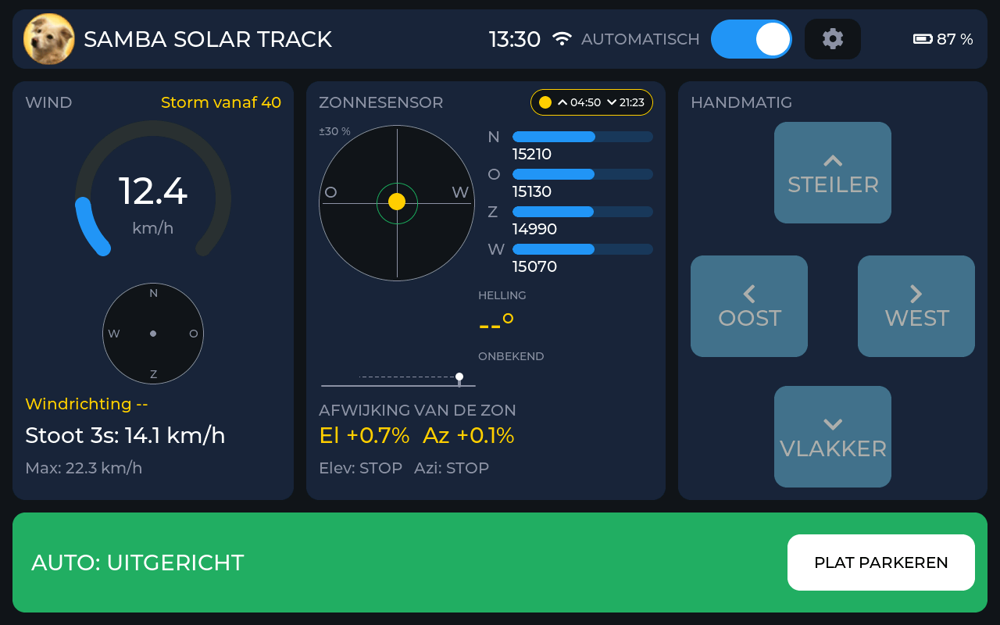
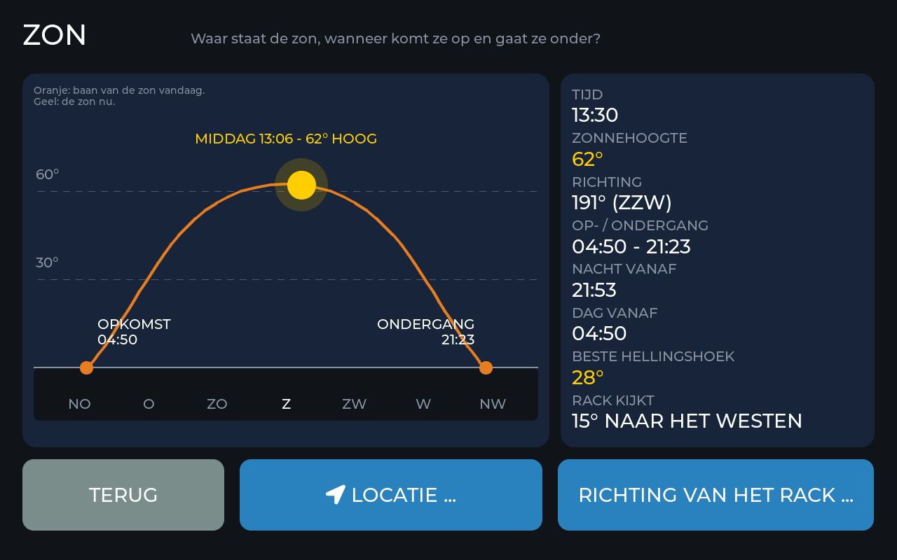
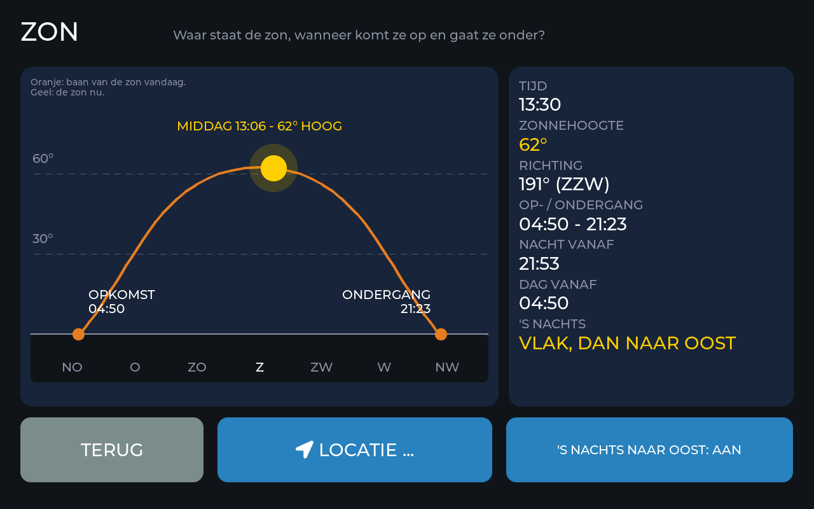
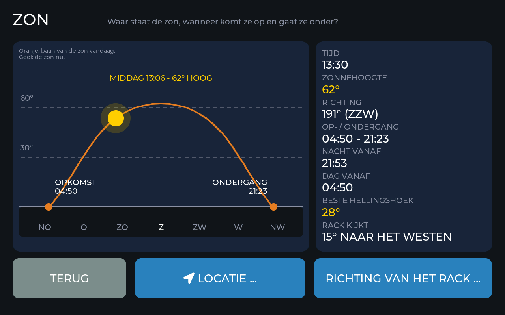
| Gegeven | Betekenis |
|---|---|
| Oranje lijn | Weg van de zon vandaag langs de hemel, van noordoost via zuid naar noordwest (in de zomer). Gele punt: de zon nu. |
| MIDDAG | Tijd en hoogte van de hoogste zonnestand. |
| ZONNEHOOGTE, RICHTING | Hoe hoog (in graden boven de horizon) en in welke windrichting de zon nu staat. |
| OP- / ONDERGANG | Vandaag, voor jouw locatie. |
| NACHT VANAF, DAG VANAF | Wanneer het apparaat naar de nachtstand gaat en wanneer de dag begint (met de verschuivingen uit 6.4). |
| BESTE HELLINGSHOEK 1 as | Welke helling nu de meeste zon opvangt, rekening houdend met de richting van het rack. |
| RACK KIJKT 1 as | De ingestelde richting (6.3). |
| 'S NACHTS 2 assen | Nachtstand: „VLAK, DAN NAAR OOST” of alleen plat. De knop 'S NACHTS NAAR OOST schakelt om. |
6.2 Locatie invoeren
De locatie bereik je via de knop LOCATIE … op de pagina ZON of in het setupprogramma (stap 10). Voor de zonnestand is een nauwkeurigheid van ongeveer 0,1° (ruim 10 km) genoeg: de dichtstbijzijnde plaats volstaat.
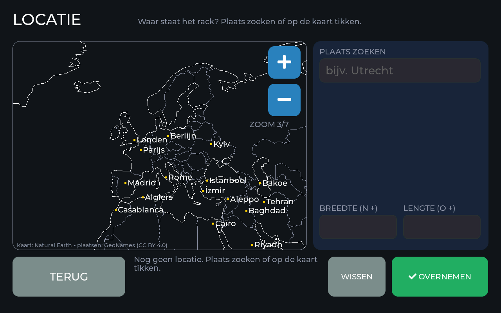
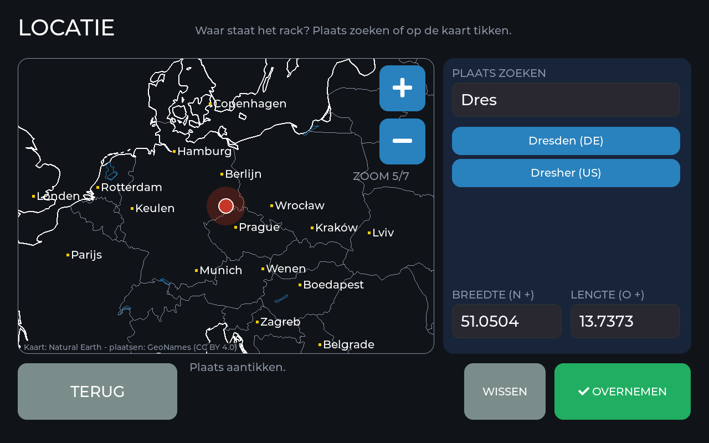
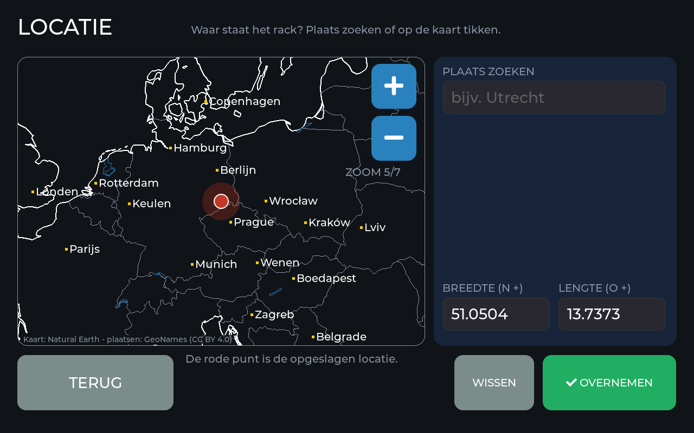
- Plaats zoeken of op de kaart tikkenIn het veld PLAATS ZOEKEN de eerste letters van je woonplaats typen en een voorstel aantikken. Of met + en − de kaart vergroten, met de vinger verschuiven en op je plaats tikken. Resultaat: breedte en lengte staan in de velden.
- Getallen controleren of intikkenWie de coördinaten kent (bijvoorbeeld uit een kaart-app), tikt ze direct in: BREEDTE (N +), LENGTE (O +), in decimale graden met punt, bijvoorbeeld 51.0504 en 13.7373. Ten zuiden van de evenaar is de breedte negatief, ten westen van Greenwich de lengte. Resultaat: de getallen kloppen.
- OVERNEMENResultaat: de rode punt staat op je plaats; de pagina ZON toont de tijden voor jouw locatie.
Af fabriek staan beide op 0. WISSEN zet de locatie terug op „niet ingevoerd”. De kaart op het display is in het apparaat opgeslagen en heeft geen internet nodig (contouren uit Natural Earth, plaatsen uit GeoNames). In de webinterface is er daarnaast een stratenkaart (hoofdstuk 8).
6.3 Richting van het rack 1 as
Een rack met één as kan niet draaien. Staat het niet precies op het zuiden, dan staat de zon voor het rack op andere tijden „vooraan”. Zodat het apparaat juist rekent, vertel je het waar je rack naartoe kijkt. Bij twee assen vervalt deze waarde, omdat het azimut de zon toch al volgt.
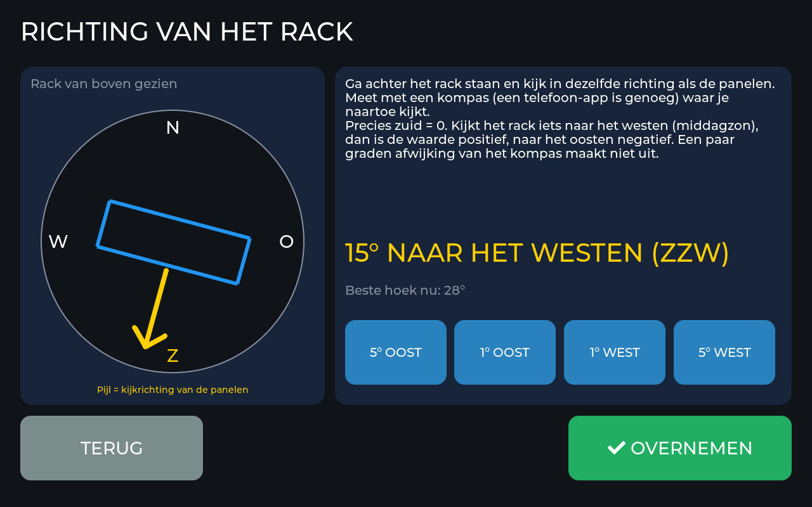
- Richting metenMeet met een kompas (een app op de telefoon is ook goed) achter het rack in de kijkrichting van de panelen. Houd het kompas niet direct tegen het metaal. Resultaat: een windrichting, bijvoorbeeld 195° (zuid-zuidwest).
- Omrekenen naar de waardeWaarde = kompasrichting − 180. Voorbeeld: 195° − 180 = +15. Bij 165° (zuid-zuidoost) geeft dat −15. Resultaat: een getal tussen −90 en +90.
- InstellenPagina ZON → RICHTING VAN HET RACK …, met 5° OOST, 1° OOST, 1° WEST, 5° WEST instellen, OVERNEMEN. Resultaat: de pagina ZON toont „RACK KIJKT 15° NAAR HET WESTEN“.
De waarde hangt alleen af van hoe je het rack hebt opgesteld. Er is geen standaardwaarde voor het rack behalve 0 (precies zuid). Een paar graden afwijking van het kompas maakt niet uit.
Als tijd of locatie ontbreken
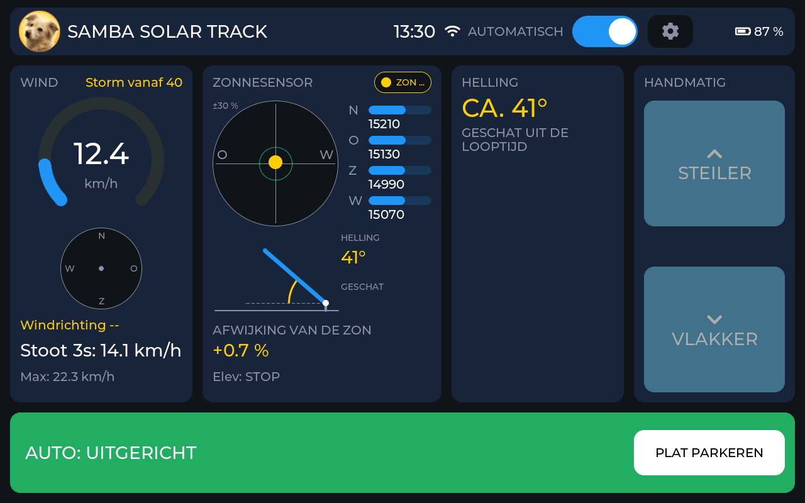
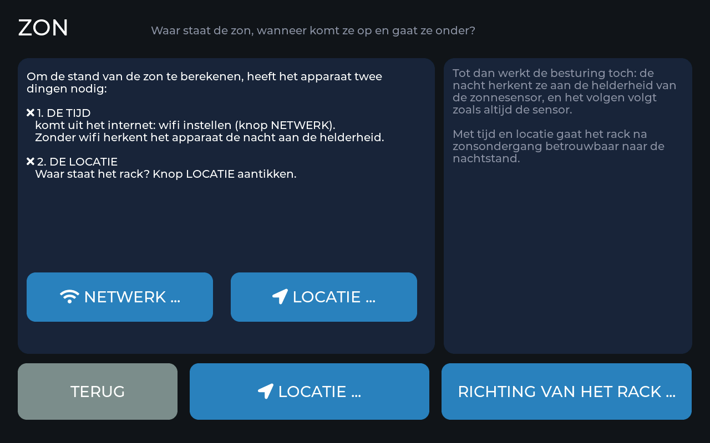
De besturing werkt toch volledig: de nacht herkent ze dan aan de helderheid, het volgen gebeurt zoals altijd met de zonnesensor.
6.4 Nacht en nachtstand
| Wat het apparaat weet | Nacht begint | Dag begint |
|---|---|---|
| Tijd en locatie | Zonsondergang + „Nacht vanaf zonsondergang plus“ (af fabriek 30 min), zonder wachttijd | Zonsopgang − „Dag vanaf zonsopgang min“ (af fabriek 0 min) |
| Tijd of locatie ontbreekt | Helderheid (som van de vier kanten) „Nacht of dag pas na“ (af fabriek 5 min) lang onder „Nacht onder helderheid“ (af fabriek 4000) | even lang boven „Dag boven helderheid“ (af fabriek 6000) |
1 as Nachtstand
De elevatie gaat plat (0-stand) en blijft daar tot de ochtend.
2 assen Nachtstand
Eerst gaat de elevatie plat, daarna draait de azimut naar het oosten (ochtendstand), als „'s Nachts terug naar oost“ aan staat (af fabriek aan). Anders blijft de azimut staan. Beide assen lopen nooit tegelijk.
De nachtrit is een normale rit met alle beveiligingen; ze wacht bijvoorbeeld een pauze van de inschakelduur af. Storm, parkeren en handmatig bedrijf hebben voorrang.
6.5 Bij bewolking naar de berekende hoek 1 as af fabriek uit
Bij dichte bewolking ziet de zonnesensor geen richting. Staat deze schakelaar aan, dan loopt de elevatie in dat geval naar de berekende beste hoek (zoals bij helling op bevel), en de statusbalk toont „BEWOLKT: …“. Voorwaarden: tijd, locatie en een ingemeten looptijd. „Bewolkt“ betekent: de som van de helderheid ligt 5 min lang onder „Bewolkt onder helderheid“ (af fabriek 20000); weer zonnig is het boven 1,25 keer die waarde. Een nieuw doel stuurt het apparaat pas aan als het minstens 3° van het oude afwijkt.
De drempel 20000 is geschat. Kijk op een bewolkte dag naar de helderheid in de kaart ZONNESENSOR (som van de vier waarden) en stel de drempel iets daarboven in (hoofdstuk 7).
7Alle instelbare waarden
Het naslaggedeelte: elke waarde onder WAARDEN met betekenis, standaardwaarde, grenzen en wanneer ze geldt. Daarbij telkens een advies voor het Samba-Solar-Rack en een uitleg hoe je bij een andere installatie de juiste waarde vindt. Alle waarden in één oogopslag: bijlage A.
De adviezen voor het rack komen uit de projectbeschrijving (README) en gelden voor het Rack 2.0-E Plus met synchroonbesturing BST-KZQ-15A-2 en zonder eindschakelaars aan de tracker. Ze moeten nog worden gecontroleerd aan de hand van de actuele versie van de montagehandleiding op de website. Waar een gegeven ontbreekt, staat „aan het eigen rack meten“ of „standaardwaarde“; maten en tijden worden hier niet geschat.
Zo wijzig je een waarde
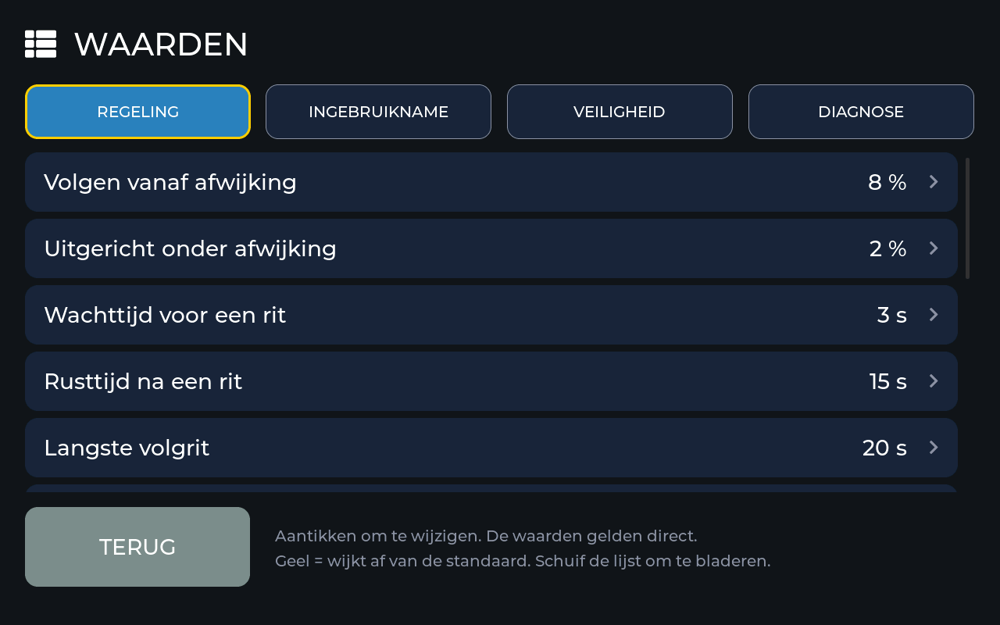

- Tandwiel → WAARDEN …De knop is er pas als het instellen opgeslagen is. Resultaat: de lijst van de groep REGELING verschijnt.
- Groep kiezenREGELING, INGEBRUIKNAME, VEILIGHEID of DIAGNOSE. Om te bladeren de lijst verschuiven. Resultaat: de waarden van de groep staan er; geel geschreven waarden wijken af van de standaardwaarde.
- Regel aantikken, waarde instellen, overnemenResultaat: de regel toont de nieuwe waarde. Ligt ze buiten de grenzen of past ze niet bij een andere waarde, dan weigert het apparaat ze en zegt waarom.
| „Geldt“ | Betekenis |
|---|---|
| meteen | De nieuwe waarde werkt bij de volgende regelstap. |
| alleen bij stilstaande aandrijvingen | De wijziging wordt geweigerd zolang een aandrijving loopt. Even wachten of PLAT PARKEREN afwachten, dan nog een keer. |
| op het display direct; op afstand pas na bevestiging | Komt de waarde uit de browser of ioBroker, dan toont het display een vraag met oude en nieuwe waarde. Pas OVERNEMEN maakt ze geldig. Voorstellen blijven na een herstart niet bewaard. |
Niet elke waarde verschijnt bij elke installatie: waarden voor de azimut alleen bij 2 assen; looptijden, onderstel, Hall-aftakking, voorkeurshoeken, richting en bewolking alleen bij 1 as; waarden van de windrichting alleen bij de windmeter met richting. De labels tonen dat.
VEILIGHEID
Veiligheidswaarden beschermen mechaniek en aandrijvingen. Hun grenzen liggen vast. Wordt een waarde op afstand gewijzigd, dan geldt ze pas als je ze op het display bevestigt (het display toont oude en nieuwe waarde).
Stormdrempel (windstoot) beide stormKmh
Vanaf deze windsnelheid gaat het rack plat. Gemeten wordt de windvlaag: het gemiddelde over 3 seconden.
Houdtijd na storm beide stormHoldMs
Zo lang blijft het rack na de laatste windvlaag boven de stormdrempel plat. Elke nieuwe windvlaag start de tijd opnieuw.
Dode tijd bij richtingswissel beide motorDeadtimeMs
Pauze voordat een aandrijving van richting mag wisselen. Spaart motor en tandwielkast.
Max. looptijd elevatie beide motorMaxRunMsElevation
Langste toegestane rit in één keer. Met eindschakelaars: wordt ze overschreden, dan meldt de besturing een aandrijvingsfout. Zonder eindschakelaars: na afloop ervan geldt de eindstand als bereikt (looptijd-eindstand).
Max. looptijd azimut 2 assen motorMaxRunMsAzimuth
Zoals hierboven, voor de draaiing oost – west.
INGEBRUIKNAME
Wat er aan je rack is ingebouwd en hoe. De meeste van deze waarden stelt het setupprogramma zelf in. Waarden „alleen bij stilstaande aandrijvingen“ weigert het apparaat zolang een aandrijving loopt.
Eindschakelaar elevatie ingebouwd beide limitSwitchesElevation
Ja: op de printplaat zijn eindschakelaars (verbreekcontact) voor beide uiteinden van de helling aangesloten. Nee: de aandrijving stopt bij zijn eigen, ingebouwde eindschakelaar; de besturing herkent het einde aan de maximale looptijd.
Eindschakelaar azimut ingebouwd 2 assen limitSwitchesAzimuth
Zoals hierboven, voor de draaiing.
Zonnesensor OOST / WEST / ZUID / NOORD op ingang AIN beide sunChEast, sunChWest, sunChSouth, sunChNorth
Welke ader van de zonnesensor op welke ingang zit. Krijgt een kant een ingang die al een andere kant heeft, dan wisselen die twee.
Noord helderder = OMHOOG beide sunNorthMeansUp
Legt vast in welke richting de helling loopt als de kant NOORD van de sensor helderder is dan ZUID. Hangt af van hoe de sensor is ingebouwd (aanname af fabriek: NOORD wijst naar de bovenrand van het paneel).
Vlakke stand ligt richting OMHOOG beide stormParkElevationPlus
In welke richting (contact OMHOOG of OMLAAG) het rack plat wordt. Bepaalt de rit bij storm, parkeren en nacht, en welke klem de knoppen STEILER en VLAKKER schakelen.
Windmeter: baudrate beide windBaud
Overdrachtssnelheid op de RS485-leiding (8 databits, geen pariteit, 1 stopbit).
Windmeter: Modbus-adres beide windSpeedAddr
Adres van de windsnelheidsmeter op de bus.
Windmeter: leescommando (3 of 4) beide windSpeedFunction
Modbus-commando om te lezen: 3 (holding register) of 4 (input register).
Windmeter: register beide windSpeedRegister
Nummer van het register waarin de windsnelheid staat.
Windmeter: m/s per teller beide windSpeedScale
Omrekening van de ruwe waarde naar m/s. 0,1 betekent: de sensor levert tienden m/s (ruwe waarde 86 = 8,6 m/s).
Windrichting: Modbus-adres, leescommando, register, ° per teller beide windDirAddr, windDirFunction, windDirRegister, windDirScale
Dezelfde gegevens voor de richtingsensor (alleen bij de windmeter met windrichting). 0,1 graad per teller: ruwe waarde 0 tot 3600 = 0° tot 360°.
Looptijd 0 naar 60° (steiler) / 60 naar 0° (vlakker) 1 as elevTravelSteepMs, elevTravelFlatMs
Hoe lang de helling over de hele weg nodig heeft. Daaruit schat het apparaat elke hoek (helling op bevel). Geldt alleen als ze korter is dan 0,9 × maximale looptijd.
Onderstel (helling uit de slag) 1 as elevGeometry
Hoe uit de weg van de aandrijving een hoek wordt. G1 en G2 zijn de tabellen van de Samba-Solar-Racks (montagehandleiding, bijlage 16.1).
Aanloopverlies per rit 1 as elevStartLossMs
Tijd die elke aandrijving bij het aanlopen en uitlopen verliest. Verbetert de schatting bij veel korte ritten.
Hall-aftakking aanwezig 1 as elevHall
Ja: het HallTapBoard geeft de pulsen van de aandrijving door aan de printplaat (ingang J22). Dan meet het apparaat de helling in plaats van ze te schatten, en herkent het of de aandrijving echt loopt. Bij twee assen blijft deze waarde uit.
Hall-telrichting omkeren 1 as elevHallInvert
Draait de telrichting om als de kanalen A en B andersom zijn aangesloten.
Hall-stappen per slag 1 as elevHallSteps
Hoeveel Hall-stappen de aandrijving over de hele weg telt. Het inmeten vult dit in (gemiddelde van OMHOOG en OMLAAG).
Reset synchroonbesturing elevatie beide syncResetElevation
Of en waar de reset-ingang (RST) van een synchroonbesturing is aangesloten. Sommige synchroonbesturingen blokkeren na een stroomuitval tijdens een rit, totdat RST kort met COM wordt verbonden; daarna trekken ze de aandrijvingen helemaal in.
Reset synchroonbesturing azimut 2 assen syncResetAzimuth
Zoals hierboven, voor de draaiing (klem J23, pool 3–4).
Locatie: breedte (noord positief) / lengte (oost positief) beide siteLatitude, siteLongitude
Waar het rack staat. Nodig voor zonsopgang en -ondergang. Het makkelijkst via de kaart (hoofdstuk 6.2).
Richting van het rack (zuid 0, west positief) 1 as rackAzimuth
Waar de panelen naartoe kijken (hoofdstuk 6.3).
REGELING
Hoe de automatische modus volgt en wanneer het nacht is. Alle waarden gelden direct.
Volgen vanaf afwijking beide trackStartPermille
Pas als de zonnesensor tussen twee kanten meer dan dit verschil ziet, begint een volgrit.
Uitgericht onder afwijking beide trackStopPermille
Onder dit verschil geldt de as als uitgericht, de rit stopt.
Wachttijd voor een rit beide trackStartDelayMs
Zo lang moet de afwijking bestaan voordat er gereden wordt. Voorkomt ritten door een korte wolk.
Rusttijd na een rit beide trackSettleMs
Pauze na elke volgrit.
Langste volgrit beide trackMaxMoveMs
Een enkele volgrit stopt uiterlijk na deze tijd.
Nacht onder helderheid (som) beide nightEnterLevel
Alleen zonder tijd of locatie: ligt de som van de vier helderheden zo lang onder deze waarde, dan is het nacht.
Dag boven helderheid (som) beide nightExitLevel
Boven deze waarde is het weer dag. Geldt ook als minimale helderheid voor zonnesensor en proefrit in het setupprogramma.
Nacht of dag pas na beide nightDelayMs
Zo lang moet de helderheid onder of boven de drempel liggen. Geldt ook voor „bewolkt“.
's Nachts terug naar oost 2 assen nightReturnEast
Ja: 's nachts draait de azimut na de vlakke rit naar het oosten, zodat de installatie 's ochtends klaarstaat.
Nacht vanaf zonsondergang plus beide nightAfterSunsetMin
Met tijd en locatie: zoveel minuten na zonsondergang begint de nacht.
Dag vanaf zonsopgang min beide dayBeforeSunriseMin
Zoveel minuten voor zonsopgang eindigt de nacht.
Bij bewolking naar berekende hoek 1 as cloudAstro
Bij bewolking loopt de helling naar de berekende beste hoek (hoofdstuk 6.5).
Bewolkt onder helderheid (som) 1 as cloudLevel
Onder deze som geldt het als bewolkt (aanname, op het apparaat instellen).
Voorkeurshoek 1 / voorkeurshoek 2 1 as elevPreset1, elevPreset2
Tot twee eigen hoeken als extra knoppen in de kaart HELLING (naast 0°, 30°, 60°).
DIAGNOSE
Alleen voor het zoeken naar fouten.
Logniveau (0 uit, 5 alles) beide logLevel
Hoe uitgebreid het apparaat logt (0 uit, 1 fouten, 2 waarschuwingen, 3 info, 4 debug, 5 alles).
Vaste waarden die je niet kunt instellen
Enkele beveiligingswaarden liggen vast in de firmware. Het is goed om ze te kennen, omdat ze verklaren waarom het rack soms wacht.
| Beveiliging | Waarde | Wat je merkt |
|---|---|---|
| Inschakelduur: rit in één keer | hoogstens 120 s | Is het looptijdtegoed van een aandrijving leeg, dan begint een pauze. De statusbalk toont oranje „PAUZE INSCHAKELDUUR: AANDRIJVING WEER VRIJ OVER mm:ss“. Na een volledig leeg tegoed duurt ze ongeveer 13,5 min. Alleen de vlakke rit bij storm, uitval van de windmeter en parkeren loopt toch. |
| Inschakelduur: aandeel | 10 %; weer vrij vanaf 90 s gespaard tegoed (aanname) | |
| Opnieuw plat bij storm (zonder eindschakelaars) | elke 30 min | Bij storm en uitval van de windmeter gaat de elevatie regelmatig opnieuw plat, voor het geval een eerdere rit zonder effect bleef. |
| Testrit in het setupprogramma | hoogstens 5 s | De testrit VLAKKER of OOST stopt vanzelf. |
De waarden van de inschakelduur zijn opgaven van de verkoper voor de aandrijvingen van het Samba-Solar-Rack (10 % inschakelduur, 120 s in één keer). Andere aandrijvingen kunnen meer of minder verdragen; instelbaar is dat in firmware 0.7.0 niet.
8Webinterface: instellen op afstand
Is de wifi verbonden, dan kun je de installatie in de browser van telefoon of pc bekijken, bedienen en instellen. De pagina ziet eruit als het display. Het display blijft wel het hoofdapparaat: alles wat er op afstand is, is er ook op het display, en sommige dingen zijn er alleen daar.
Bekijken en update via het netwerk zijn op het testboard uitgeprobeerd (in de simulatie, zonder printplaat). Bedienen en instellen op afstand zijn daar nog niet uitgeprobeerd; locatiekaart, zon en testrapport zijn nieuw in 0.7.0 en alleen op de pc gecontroleerd.
Openen en aanmelden
- Adres openenTik in hetzelfde wifi-netwerk het adres van het scherm NETWERK in de browser in, of
http://samba-solar-track.local. Resultaat: het overzicht verschijnt; zonder aanmelding staat bovenaan „ALLEEN WEERGAVE“. - AanmeldenScan op de telefoon de QR-code onder NETWERK → OP AFSTAND. Op de pc TOKEN INVOEREN en de vier blokken van het token intikken die het scherm NETWERK toont. Resultaat: de browser mag bedienen en instellen; hij onthoudt de aanmelding.


Wat op afstand kan
| Pagina | Instelling | Hoe het werkt |
|---|---|---|
| INSTELLEN | Taal, design | direct, op het display en in de browser; alleen zolang op het display het dashboard open is |
| INSTELLEN | Bedrijfsmodus, windmeter | zoals OPSLAAN op het display: aandrijvingen stoppen, herstart na 1,5 s |
| INSTELLEN | Locatie (kaart), richting van het rack 1 as | meteen |
| INSTELLEN | Setupprogramma: stand en testrapporten (telkens BEKIJKEN, opslaan als pdf, en TEKST) | alleen bekijken, opslaan en downloaden |
| INSTELLEN | Firmware installeren of uit het internet installeren; simulatie beëindigen | met token; niet bij storm en niet zolang een aandrijving loopt |
| WAARDEN | alle waarden uit hoofdstuk 7 | Regeling en ingebruikname direct of bij stilstand; veiligheidswaarden, richting van de vlakke stand en gegevens van de windsnelheid pas na bevestiging op het display |
| WAARDEN | SYNCHROONBESTURING RESETTEN | met bevestigingsvraag in de browser |
Locatie en richting in de browser
In de browser is er een stratenkaart (Leaflet met kaarten van OpenStreetMap) en een plaatszoekfunctie (Nominatim). De kaartbeelden laadt je browser uit het internet, niet het apparaat; zonder internet werken de getalvelden toch.
Wat alleen op het display kan, en waarom
| Alleen op het display | Waarom |
|---|---|
| Het setupprogramma doorlopen | Bij elke testrit moet er iemand bij het rack staan en toekijken. De browser toont alleen de voortgang. |
| LOOPTIJD INMETEN 1 as | Zelfde reden: je tikt AANGEKOMEN als het frame stilstaat. Tijdens het inmeten weigert het apparaat handmatige ritten op afstand. |
| Bevestigen van veiligheidswaarden | Een waarde die de mechaniek beschermt, mag niet ongemerkt op afstand gewijzigd worden. |
| Wifi-naam en wachtwoord | Zonder wifi is er geen browser. Als alternatief via de instel-hotspot (4.4). |
| QR-code, token tonen, TOKEN VERNIEUWEN, AFSTANDSBEDIENING blokkeren | Wie bij het apparaat staat, beslist wie op afstand mag bedienen. |
| Simulatie aanzetten | Vereist een bevestiging op het apparaat en kan alleen zonder printplaat. |
| Geluid, scherm (rusttoestand, bewegingsmelder, accu) | Betreft alleen het apparaat zelf. |
Geblokkeerd neemt het apparaat op afstand geen opdracht, geen wijziging en geen firmware-update aan. Weergaven en meldingen lopen door. Stormbeveiliging, eindschakelaars, dode tijd en looptijdbewaking kunnen op afstand nooit worden opgeheven.
9Fouten zoeken bij het instellen
De meest voorkomende meldingen en waarnemingen bij het instellen, met oorzaak en oplossing. Fouten in de bekabeling behandelt de bekabelingshandleiding (alleen in het Duits), fouten van de printplaat de handleiding voor opbouw en bediening.
| Weergave of waarneming | Oorzaak | Oplossing |
|---|---|---|
| Alles in het Engels | Af fabriek is de taal Engels. | In de taalkeuze NEDERLANDS aantikken (4.1). |
| OPSLAAN + HERSTART kan niet aangetikt worden | Bedrijfsmodus of windmeter niet gekozen. | Beide kiezen. |
| Knop WAARDEN ontbreekt | Instellen nog niet opgeslagen. | Eerst OPSLAAN + HERSTART. |
| BEREIT knippert, er loopt niets | Instellen ontbreekt. | Instellen opslaan. |
| Paarse balk „SETUPPROGRAMMA ONTBREEKT: AUTOMATISCH GEBLOKKEERD“ | Setupprogramma niet voltooid. | Balk aantikken en verdergaan (hoofdstuk 5). |
| Na het opsteken van de printplaat: paarse balk „SETUPPROGRAMMA ONTBREEKT“, hoewel het setupprogramma klaar was | Het is alleen in de simulatie voltooid. Aan het echte rack begint het dan vanzelf opnieuw. | Zo bedoeld. Setupprogramma aan het rack doorlopen (hoofdstuk 5). |
| „SIMULATIE NIET MOGELIJK“ | De printplaat RearCircuitBoard_10 is opgestoken. | Met printplaat is er geen simulatie; dat is zo bedoeld. |
| Stap 3: veld 0x70 rood | Printplaat zit niet goed, chip gestoord. | Voeding uit, printplaat op de female header J8 controleren. Zonder 0x70 loopt er niets. |
| Stap 3: 24 V of 5 V rood | Voeding van de besturing uit, zekering, omvormer. | Voeding en zekering controleren (bekabelingshandleiding, alleen in het Duits). |
| Stap 3: ACCU rood | Laadblokkering onaannemelijk. | Handleiding voor opbouw en bediening, hoofdstuk 7. |
| Stap 3: 0x72 rood | Reset op J23 gekozen, chip antwoordt niet (printplaat van vóór ontwerp 0.12?). | In stap 2 reset op „uit“ zetten of printplaat controleren. |
| „De windmeter is nog niet rondgedraaid.“ | Weergave steeg met minder dan 2 km/h, of de windmeter antwoordt niet. | Krachtiger draaien. Antwoordt hij niet: RS485-leiding (A/B verwisseld?), voeding, adres en baudrate. |
| Windrichting wijst niet naar het noorden | Sensor verdraaid ingebouwd of verkeerde waarden. | Noordmarkering van de sensor uitrichten, waarden van de windrichting controleren, HERHALEN. |
| Bij VLAKKER werd het rack steiler | Richting van de vlakke stand andersom. | NEE tikken: het apparaat zet het om. HERHALEN. |
| Bij VLAKKER beweegt er niets | Voeding van de aandrijvingen uit, contacten niet aangesloten, synchroonbesturing niet in tipbedrijf of geblokkeerd (bijvoorbeeld na een stroomuitval). | Bekabeling controleren; bij synchroonbesturing met reset: reset instellen en activeren. |
| „Aandrijving gestoord (max. looptijd). Bevestigen en herhalen.“ | Met „Eindschakelaar ingebouwd = ja“ kwam de eindschakelaar niet vóór het verstrijken van de maximale looptijd. | Eindschakelaars aanwezig? Anders op nee zetten. Anders de maximale looptijd verhogen. BEVESTIGEN, HERHALEN. |
| Beide richtingen geblokkeerd, er loopt niets | „Eindschakelaar ingebouwd = ja“, maar geen eindschakelaars aangesloten (open ingang = eindstand). | Op nee zetten (eindschakelaars). |
| „Aandrijving staat zonder eindstand (Hall-sensor).“ | Hall-pulsen bleven halverwege weg: mechaniek klemt, aandrijving zonder spanning, synchroonbesturing heeft afgebroken. | Mechaniek en voeding van de aandrijvingen controleren, HERHALEN. |
| „De looptijd is nog niet ingemeten.“ | LOOPTIJD INMETEN niet voltooid. | Inmeten en OVERNEMEN. |
| Inmeten: „MAX. LOOPTIJD TE KORT OF AANGEKOMEN NIET GETIKT“ | Rit duurde langer dan de maximale looptijd, of AANGEKOMEN vergeten. | Maximale looptijd verhogen, opnieuw meten. |
| Inmeten: „HALL TELT ACHTERUIT“ | Kanalen A en B verwisseld. | Hall-telrichting omkeren = ja. |
| Bij OOST draait het rack naar het westen | Contacten OOST en WEST verwisseld. | Voeding uit, stekkers op J5 en J6 verwisselen, HERHALEN. |
| „Reset niet mogelijk (aansluiting of chip controleren).“ | Reset begon niet binnen 20 s. | Klem en instelling van de reset controleren. |
| „Te donker: … herhalen.“ | Helderheid onder de dagdrempel. | Bij daglicht of met een felle lamp voor de sensor. |
| Zonnesensor: kant wordt niet herkend | Schaduw te klein (minder dan 25 % donkerder) of maar kort. | Hand dichterbij, schaduw over de hele kant, 1 s vasthouden. |
| „Nog geen tijd: wifi instellen of overslaan.“ | Wifi uit of tijdserver niet bereikbaar. | Wifi instellen (4.4) of OVERSLAAN. |
| Tijd een of meer uren verkeerd | Tijdzone verkeerd. | NETWERK → TIJD → VOORSTELLEN. |
| „Nog geen locatie: invoeren of overslaan.” | Breedte en lengte zijn 0. | Locatie invoeren (6.2). |
| Opkomst en ondergang passen niet bij je plaats | Breedte en lengte verwisseld of voorteken verkeerd. | Breedte = noord, lengte = oost; controleren. |
| Proefrit: „De richting is omgezet. Nog een keer, graag.“ | Automatische modus liep van de zon weg. | HERHALEN; het apparaat heeft de waarde al gecorrigeerd. |
| „De automatische modus heeft niet uitgelijnd. Genoeg zon?“ | Na 3 min niet uitgericht. | Bij zon herhalen; sensor vrij van schaduw? |
| „Storm: het rack gaat plat. Daarna herhalen.“ | Windvlaag boven de stormdrempel. | Einde van de storm en van de houdtijd afwachten, HERHALEN. |
| Oranje „PAUZE INSCHAKELDUUR …“ | Looptijdtegoed van de aandrijving leeg. | Wachten; de resterende tijd staat erbij (hoofdstuk 7). |
| Waarde wordt geweigerd | Buiten de grenzen, past niet bij een andere waarde, of een aandrijving loopt. | Reden lezen; bij „alleen bij stilstaande aandrijvingen“ even wachten. |
| Browser: wijziging wordt niet aangenomen | Niet aangemeld, AFSTANDSBEDIENING geblokkeerd, of op het display is niet het dashboard open (taal, design). | Aanmelden, blokkering op het display opheffen, display terug naar het dashboard. |
10Begrippen eenvoudig uitgelegd
- As
- Een richting waarin het rack kan bewegen. Elevatie = helling, azimut = draaiing.
- Automatische modus
- De besturing laat het rack vanzelf de zon volgen, gaat 's nachts naar de nachtstand en 's ochtends terug. Schakelaar AUTOMATISCH in de kopregel.
- Azimut
- De draaiing van oost naar west, alleen bij 2 assen. Ook: de windrichting van de zon in graden.
- Windvlaag
- Hier: het gemiddelde van de windsnelheid over 3 seconden. Ligt het boven de stormdrempel, dan is het storm.
- Decimale graden
- Schrijfwijze voor breedte en lengte met decimalen, bijvoorbeeld 51.0504 in plaats van 51° 3′ 1″.
- Inmeten
- Het apparaat meet de looptijd (en met Hall-aftakking de Hall-stappen) over de hele weg van de helling. Alleen bij 1 as.
- Inschakelduur
- Hoe lang een aandrijving in verhouding tot de pauze mag lopen zonder oververhit te raken. Hier 10 % en hoogstens 120 s in één keer.
- Inrichting
- Het scherm met bedrijfsmodus en windmeter. Zonder opgeslagen instellen loopt geen enkele aandrijving.
- Elevatie
- De helling van het paneel tussen plat en steil.
- Eindstand
- Het einde van het looptraject in één richting.
- Eindschakelaars
- Een schakelaar aan het einde van het looptraject die opent als hij bereikt wordt (verbreekcontact, NC). Open betekent voor de besturing: richting geblokkeerd.
- Vlakke stand
- De vlakke ligging van het paneel. Tegelijk stormstand en nachtstand (0-stand).
- Onderstel G1, G2
- De bouwvormen van de Samba-Solar-Racks. Ze bepalen hoe uit de weg van de aandrijving een hoek wordt.
- Hall-aftakking, Hall-stappen
- Veel aandrijvingen hebben een Hall-sensor die tijdens het lopen pulsen geeft. Het HallTapBoard leidt ze naar de printplaat. Een Hall-stap is een getelde flank van deze pulsen.
- Houdtijd
- Zo lang blijft het rack na de laatste stormvlaag plat.
- Handmatig bedrijf
- Automatische modus uit: het rack loopt alleen zolang je een ritknop ingedrukt houdt.
- Maximale looptijd
- Langste toegestane rit in één keer. Zonder eindschakelaars herkent de besturing daaraan de eindstand.
- Hotspot
- Een eigen, tijdelijk wifi-netwerk van het apparaat, om met de telefoon de wifi-gegevens in te voeren.
- Looptijd-eindstand
- Zonder eindschakelaars: na de hele maximale looptijd in één keer geldt de eindstand als bereikt.
- Modbus, RS485
- De manier waarop de windmeter via twee aders met de printplaat praat. Elke sensor op de bus heeft een adres.
- NTP, tijdserver
- Een dienst op het internet waarvan het apparaat de exacte tijd haalt.
- 0-stand
- De nachtstand: elevatie plat.
- Proefrit
- Laatste teststap van het setupprogramma: de automatische modus moet het verstelde rack weer naar de zon draaien.
- Testrapport
- Rapport met alle resultaten en meetwaarden van het setupprogramma, in de webinterface als vormgegeven blad (pdf) of als tekstbestand; de laatste drie blijven in het apparaat.
- Reset van de synchroonbesturing
- Een kort contact tussen RST en COM, waarmee sommige synchroonbesturingen zich na een fout weer vrijgeven; ze trekken daarbij de aandrijvingen helemaal in.
- Setupprogramma
- De begeleide controle van de hele installatie na het instellen. Pas daarna is de automatische modus vrij.
- Simulatie
- Bedrijf zonder printplaat met een nagebootst rack, alleen om uit te proberen.
- Zonnesensor
- Een sensor met vier kanten (oost, west, zuid, noord). Uit het verschil in helderheid herkent de besturing waar de zon staat.
- Stormdrempel
- Windsnelheid vanaf welke het rack plat gaat.
- Synchroonbesturing
- Een besturingsapparaat dat twee aandrijvingen van een as precies even snel laat lopen (bijvoorbeeld BST-KZQ-15A-2). De printplaat „drukt“ op zijn knoppen.
- Token
- Geheime sleutel van 32 tekens. Wie hem heeft, mag op afstand bedienen.
- Dode tijd
- Pauze voor een richtingswissel.
- Webinterface
- De bedieningspagina in de browser van telefoon of pc, in het wifi-netwerk thuis.
11Bijlage
A. Alle waarden in één oogopslag
Geldt: „direct“, „stilstand“ = alleen bij stilstaande aandrijvingen, „bevestiging¹“ = op het display direct, op afstand pas na bevestiging op het display. Assen: 1 = alleen 1 as, 2 = alleen 2 assen, 1+2 = beide. Kolom Samba-Solar-Rack: korte vorm, details in hoofdstuk 7. Details en adviezen voor andere racks: op de naam klikken.
| Waarde (display) | Assen | Fabrieksinstelling | Toegestaan | Geldt | Samba-Solar-Rack |
|---|---|---|---|---|---|
| VEILIGHEID | |||||
| Stormdrempel (windstoot) | 1+2 | 40 km/h | 20 tot 60 km/h | Bevestiging¹ | 40 km/h |
| Houdtijd na storm | 1+2 | 10 min | 5 tot 60 min | Bevestiging¹ | 10 min |
| Dode tijd bij richtingswissel | 1+2 | 500 ms | 300 tot 5000 ms | Bevestiging¹ | 500 ms |
| Max. looptijd elevatie | 1+2 | 60 s | 5 tot 300 s | Bevestiging¹ | 90 s |
| Max. looptijd azimut | 2 | 90 s | 5 tot 300 s | Bevestiging¹ | – |
| INGEBRUIKNAME | |||||
| Eindschakelaar elevatie ingebouwd | 1+2 | ja | ja / nee | Stilstand | nee |
| Eindschakelaar azimut ingebouwd | 2 | ja | ja / nee | Stilstand | – |
| Zonnesensor OOST / WEST / ZUID / NOORD op ingang AIN | 1+2 | OOST AIN0, WEST AIN1, ZUID AIN2, NOORD AIN3 | AIN0 tot AIN3, elke kant een andere ingang | Stilstand | Setupprogramma |
| Noord helderder = OMHOOG | 1+2 | ja | ja / nee | Stilstand | Setupprogramma |
| Vlakke stand ligt richting OMHOOG | 1+2 | ja | ja / nee | Bevestiging¹ | Setupprogramma |
| Windmeter: baudrate | 1+2 | 9600 baud | 1200 tot 115200 | Bevestiging¹ | 9600 |
| Windmeter: Modbus-adres | 1+2 | 3 | 1 tot 247 | Bevestiging¹ | 3 |
| Windmeter: leescommando (3 of 4) | 1+2 | 3 | 3 of 4 | Bevestiging¹ | 3 |
| Windmeter: register | 1+2 | 0 | 0 tot 65535 | Bevestiging¹ | 0 |
| Windmeter: m/s per teller | 1+2 | 0,1 | 0,001 tot 10 | Bevestiging¹ | 0,1 |
| Windrichting: Modbus-adres, leescommando, register, ° per teller | 1+2 | 4 · 3 · 0 · 0,1 | 1–247 · 3/4 · 0–65535 · 0,001–10 | meteen | 4 · 3 · 0 · 0,1 |
| Looptijd 0 naar 60° (steiler) / 60 naar 0° (vlakker) | 1 | 0 = niet ingemeten | 0 of 10 tot 300 s | Stilstand | inmeten |
| Onderstel (helling uit de slag) | 1 | lineair | lineair · G1 (2.0-D, 2.0-E) · G2 (2.0-E Plus, 2.1, 2.1 Plus) | Stilstand | G2 (2.0-E Plus) |
| Aanloopverlies per rit | 1 | 0 ms | 0 tot 3000 ms | Stilstand | 0 ms |
| Hall-aftakking aanwezig | 1 | nee | ja / nee | Stilstand | ja met HallTapBoard |
| Hall-telrichting omkeren | 1 | nee | ja / nee | Stilstand | nee |
| Hall-stappen per slag | 1 | 0 = niet ingemeten | 0 of 1000 tot 2000000 | Stilstand | inmeten |
| Reset synchroonbesturing elevatie | 1+2 | uit | uit · J23 · J5 (J5 alleen bij 1 as) | Stilstand | J23 |
| Reset synchroonbesturing azimut | 2 | uit | uit · J23 | Stilstand | – |
| Locatie: breedte (noord positief) / lengte (oost positief) | 1+2 | 0 / 0 = niet ingevoerd | breedte −90 tot 90, lengte −180 tot 180 graden | meteen | je eigen plaats |
| Richting van het rack (zuid 0, west positief) | 1 | 0° | −90 tot 90 graden, hele graden | meteen | meten |
| REGELING | |||||
| Volgen vanaf afwijking | 1+2 | 8 % | 3 tot 30 % | meteen | Fabrieksinstelling |
| Uitgericht onder afwijking | 1+2 | 2 % | 0,5 tot 10 %, altijd kleiner dan „Volgen vanaf“ | meteen | Fabrieksinstelling |
| Wachttijd voor een rit | 1+2 | 3 s | 0 tot 60 s | meteen | Fabrieksinstelling |
| Rusttijd na een rit | 1+2 | 15 s | 0 tot 600 s | meteen | Fabrieksinstelling |
| Langste volgrit | 1+2 | 20 s | 1 tot 120 s | meteen | Fabrieksinstelling |
| Nacht onder helderheid (som) | 1+2 | 4000 | 0 tot 100000 | meteen | Fabrieksinstelling |
| Dag boven helderheid (som) | 1+2 | 6000 | 0 tot 130000, altijd groter dan de nachtdrempel | meteen | Fabrieksinstelling |
| Nacht of dag pas na | 1+2 | 5 min | 10 s tot 60 min | meteen | Fabrieksinstelling |
| 's Nachts terug naar oost | 2 | ja | ja / nee | meteen | – |
| Nacht vanaf zonsondergang plus | 1+2 | 30 min | 0 tot 180 min | meteen | Fabrieksinstelling |
| Dag vanaf zonsopgang min | 1+2 | 0 min | 0 tot 180 min | meteen | Fabrieksinstelling |
| Bij bewolking naar berekende hoek | 1 | nee | ja / nee | meteen | naar wens |
| Bewolkt onder helderheid (som) | 1 | 20000 | 0 tot 130000 | meteen | naar wens |
| Voorkeurshoek 1 / voorkeurshoek 2 | 1 | 0 = uit | 0 of 1 tot 59°, niet 30, niet dubbel | meteen | naar wens |
| DIAGNOSE | |||||
| Logniveau (0 uit, 5 alles) | 1+2 | 4 | 0 tot 5 | tot herstart | Fabrieksinstelling |
B. Mijn waarden (om af te drukken)
Vul hier in wat je aan je installatie hebt ingesteld en gemeten. De meetwaarden van het setupprogramma staan ook in het testrapport.
| Gegeven | Mijn waarde | Datum |
|---|---|---|
| Bedrijfsmodus (1 of 2 assen), windmeter | ||
| Eindschakelaars elevatie / azimut | ||
| Max. looptijd elevatie / azimut | ||
| Gemeten looptijd steiler / vlakker | ||
| Looptijd oost / west / terug naar oost (2 assen) | ||
| Hall-stappen per slag | ||
| Afgelezen hoek bij 30° (1 as) | ||
| Vlakke stand richting OMHOOG (ja/nee) | ||
| Locatie breedte / lengte | ||
| Richting van het rack (1 as) | ||
| Helderheid (som) in de schemering / bij bewolking | ||
| Apparaatnaam, adres in het wifi-netwerk |
C. Aannames en open punten
| Punt | Stand |
|---|---|
| Firmware 0.7.0 met setupprogramma, zonnestand en locatie | alleen op de pc en in de simulatie getest, niet aan het rack |
| Grenswaarden van het setupprogramma (looptijden, Hall-stappen, hoeken) | geen; worden na levering van de aandrijvingen aan het rack vastgelegd (E-S3) |
| 0-stand = vlakke stand (stormrichting) | Aanname voor alle aandrijvingsvarianten |
| Inbouwpositie van de zonnesensor (NOORD naar de bovenrand) | Aanname; setupprogramma corrigeert de richting |
| Drempel „bewolkt“ 20000 | Aanname, op het apparaat instellen |
| Reset van de synchroonbesturing: puls 5 s, gedrag daarna | Aanname, aan het rack meten |
| Vrijgave van de inschakelduur na 90 s gespaard tegoed | Aanname, aan het rack controleren |
| Max. looptijd 90 s en onderstel G2 voor het Rack 2.0-E Plus | uit de README; controleren aan de hand van de actuele montagehandleiding |
| Onderstel „lineair“ voor andere racks | Aanname |
D. Overige documentatie
- Handleiding voor opbouw en bediening (
index.html): printplaat, sensoren, firmware, bediening. - Bekabelingshandleiding (
verkabelung.html, alleen in het Duits): alle leidingen. - Montagehandleiding van het Samba-Solar-Rack: website en shop.
12Licentie en copyright
Samba Solar Track mag je voor jezelf nabouwen. Geld verdienen mag niemand ermee zonder toestemming.
© Silvio Sternitzke, 11/2026. Deze handleiding inrichting en instellingen valt, net als het hele project, onder de licentie Creative Commons Naamsvermelding – NietCommercieel – GelijkDelen 4.0 Internationaal, kort CC BY-NC-SA 4.0.
Toegestaan
Nabouw voor privédoeleinden. Kopiëren, doorgeven en wijzigen, zolang het niet commercieel gebeurt.
Voorwaarden
De maker en de licentie vermelden. Gewijzigde versies alleen onder dezelfde licentie doorgeven.
Verboden
Elk commercieel gebruik door anderen.
Bindend is de licentietekst in het bestand LICENSE; een Duitse samenvatting staat in LIZENZ.md. Het Samba-Solar-Rack en de accessoires horen niet bij Samba Solar Track; deze handleiding noemt ze alleen.
Bronnen van de kaarten en plaatsen
| Wat | Bron | Licentie |
|---|---|---|
| Omtrekken van landen en kusten in de kaart op het display | Natural Earth | publiek domein |
| Plaatsnamen van de zoekfunctie op het display | GeoNames | CC BY 4.0 |
| Kaartweergave in de webinterface | Leaflet 1.9.4 (in het apparaat inbegrepen) | BSD-2-Clause |
| Kaartbeelden en plaatszoekfunctie in de webinterface | OpenStreetMap (tegels), Nominatim; laadt de browser uit het internet | © OpenStreetMap-bijdragers, ODbL |
De documentatie wordt zonder garantie ter beschikking gesteld. Opbouw, inrichting en bedrijf gebeuren op eigen verantwoordelijkheid.
13Wijzigingsoverzicht
Wat er in deze handleiding is gewijzigd, de nieuwste wijziging eerst.
| Uitgave | Datum | Wijziging |
|---|---|---|
| 0.7.6 | 11/2026 | Testrapport: in de webinterface BEKIJKEN als vormgegeven blad (licht of donker) en OPSLAAN ALS PDF, daarnaast TEKST; afbeelding van de pagina FIRMWARE met 0.7.6. |
| 0.7.0 | 11/2026 | Eerste uitgave bij firmware 0.7.0: instellen op het display, setupprogramma voor één en twee assen, locatie, richting, zon en nacht, alle instelbare waarden met adviezen voor het Samba-Solar-Rack en andere racks, webinterface, fouten zoeken. Firmware alleen op de pc getest. |